1. CAPÍTULO 1. NORMAS URBANÍSTICAS COMUNES
1.1. CONCEPTOS Y DEFINICIONES
Las
definiciones establecidas en el presente documento constituyen complemento de
las disposiciones establecidas en el Decreto Distrital 555 de 2021 y normas que
lo modifiquen o sustituyan, así como de sus documentos y planos anexos.
1.1.1. Antejardín:
Área libre de
propiedad privada que hace parte de las áreas privadas afectas al uso público,
comprendida entre el lindero del predio contra espacio público, y el paramento de construcción reglamentario.
1.1.2. Antejardín existente:
A efectos de la
aplicación de las normas sobre Empates de
antejardines, definidas en este documento, corresponde al antejardín
previsto por las edificaciones existentes de tres (3) o más pisos.
1.1.3. Aislamiento entre edificaciones:
Separación
del plano de fachada de las edificaciones de un mismo proyecto, en uno o varios
lotes.
1.1.4. Aislamiento lateral:
Separación
del plano de fachada de las edificaciones respecto del lindero lateral del
lote.
1.1.5. Aislamiento posterior:
Separación
del plano de fachada de las edificaciones respecto del lindero posterior del
lote.
1.1.6. Área construida en el uso:
Corresponde al área construida para un uso en
particular, descontando muros de fachada, muros perimetrales, ductos,
estructura, equipamiento comunal privado, circulaciones comunes y cuartos de
acopio. Esta área se usa para efectos del cálculo de equipamiento comunal privado (Ver
1.3., 1.3.2., A. Exigencia de equipamiento comunal privado), cuartos de acopio (Ver artículo 190, numeral 7 del Decreto Distrital 555 de 2021) y área mínima habitable de la unidad de
vivienda (Ver artículo 384 del Decreto
Distrital 555 de 2021). (Ver
ilustración 01)
1.1.7. Área Construida para el cálculo de obligaciones e incentivos urbanísticos por edificabilidad.
Para efectos del
cálculo del índice de construcción efectivo y de las obligaciones urbanísticas
correspondientes a cesiones de suelo o compensaciones y de área en productos
inmobiliarios VIS y VIP, el área construida es la parte edificada que
corresponde a la suma de la superficie de todos los pisos. Excluye azoteas, hall de cubierta, áreas duras sin cubrir
o techar, áreas de las instalaciones mecánicas, depósitos que se encuentren en
pisos de la edificación que no contengan usos
habitables, y que a su vez no colinden con unidades privadas habitables, puntos fijos, el área de los
estacionamientos y de circulación vehicular y el área de equipamiento comunal privado ubicada en un piso como máximo, así
como el área de los estacionamientos y de circulación vehicular ubicados en
semisótanos y sótanos. El área construida no podrá superar la edificabilidad
máxima permitida para cada tratamiento urbanístico. Para el cálculo de
obligaciones urbanísticas no se contabilizará en el área construida el área
destinada al cumplimiento de la obligación VIS – VIP, con excepción del
tratamiento urbanístico de Desarrollo.
1.1.8. Área construida para el cálculo de estacionamientos:
Corresponde
a la definida en el artículo 390 del Decreto Distrital 555 de 2021. (Ver artículo 390 del Decreto Distrital 555
de 2021).
1.1.9. Área mínima habitable:
Para
efectos de la aplicación del artículo 384 del Decreto Distrital 555 de 2021, y
de la Circular No. 007 de 2022 de la Secretaría Distrital de Planeación,
corresponde al área construida en el uso
para las unidades de vivienda, allí definidas. (Ver artículo 384 del Decreto Distrital 555 de 2021)
1.1.10. Área neta urbanizable – ANU:
Es el área
resultante de descontar del área bruta, las áreas para la localización de la
infraestructura para el sistema vial principal y de transporte, las redes
primarias de servicios públicos domiciliarios y las áreas de conservación y
protección de los recursos naturales y paisajísticos. (Ver artículo 2.2.1.1. del Decreto Nacional 1077 de 2015)
1.1.11. Área total construida:
Parte
edificada que corresponde a la suma de las superficies de los pisos, excluyendo
azoteas y áreas sin cubrir o techar. (Ver
artículo 2.2.6.1.1.7 del Decreto Nacional 1077 de 2015)
1.1.12. Cubierta:
Parte
superior de un edificio destinada a protegerlo de los agentes atmosféricos.
1.1.13. Empate de antejardín:
Acción de
igualar la dimensión del antejardín de la edificación vecina existente.
1.1.14. Empate estricto:
Corresponde
al empate volumétrico, en el cual se
incluyen, además de los elementos previstos para dicho empate, los ángulos de
cubiertas y aleros. (Ver ilustración 02A)
1.1.15. Empate volumétrico:
Adosamiento
de la forma arquitectónica proyectada, contra los volúmenes construidos de las
edificaciones colindantes en relación con la altura en metros, aislamientos y
voladizos. Excluye los siguientes elementos: ductos, chimeneas, remates de
cubiertas, puntos fijos, cerramientos, tanques, equipos técnicos,
sobre-recorridos de ascensores y hall de cubierta. (Ver
ilustración 02B)
1.1.16. Equipamiento Comunal Privado:
Áreas de
propiedad privada destinadas al servicio común de determinado grupo de
personas, necesarias para el buen desarrollo de las actividades a las cuales
está destinada una edificación o conjunto de edificaciones.
1.1.17. Frente de lote:
Dimensión
que presenta un lote o englobe sobre cualquiera de las vías o espacio público
que lo delimitan.
1.1.18. Grandes superficies:
Corresponde a usos comerciales y de servicios Tipo 3. (Ver artículo 233 numeral 4 del Decreto Distrital 555 de 2021).
1.1.19. Hall de cubierta:
Área cubierta que
corresponde al punto fijo sobre la
cubierta. En este hall se permite un área adicional, que no exceda en más de
dos veces el área de ascensores y escaleras, en la cual se puede incluir baños
para personas en condición de discapacidad, u otras áreas contabilizables
como equipamiento comunal privado. (Ver ilustración 03B)
1.1.20. Línea de inclinación del terreno:
Línea
recta resultante de la unión entre el punto más alto y el punto más bajo de los
límites del paramento propuesto de una edificación sobre el terreno. Esta línea
puede corresponder a superficies naturales, o niveladas a través de obras
ejecutadas por urbanismo, legalizaciones u obras dse
infraestructura. (Ver ilustración 04)
1.1.21. Micromovilidad:
De acuerdo
con la Circular Externa No. 11 de 2021 de la Secretaría de Movilidad, se entiende como la movilización
individual en vehículos pequeños, ligeros, que funcionan por autopropulsión,
energía eléctrica, o con una combinación de las dos, que incluye, pero no se
limita, a las bicicletas y patinetas. Esta definición podrá ser ajustada por
acto administrativo que expida la Secretaría Distrital de Movilidad.
1.1.22. Paramento de construcción reglamentario:
Para
efectos de la aplicación de las definiciones de Antejardín y Voladizo,
constituye el plano vertical que delimita la fachada de un inmueble sobre un
área pública o privada, el cual se determina en función de las normas de cada
tratamiento.
1.1.23. Patio:
Espacio
sin cubrir de una edificación, delimitado por sus fachadas internas o muros
medianeros propios de la edificación o entre predios vecinos, que garantiza
iluminación y ventilación natural a los espacios habitables.
1.1.24. Predio urbanizado no edificado:
Predio
señalado con la denominación UNE en los mapas CU-5.4.2. a CU-5.4.33. que cuenta
con proceso de urbanización legalmente ejecutado, en el cual no existen
edificaciones. (Ver artículo 313 del
Decreto Distrital 555 de 2021).
1.1.25. Predio:
Terreno o
lote individualizado, de propiedad privada o bien fiscal, identificado con un
folio de matrícula inmobiliaria. (Ver
artículo 2.2.1.1. del Decreto Nacional 1077 de 2015)
1.1.26. Punto fijo:
Corresponde
al área de ascensores y escaleras, así como las circulaciones comunes en cada
piso, que no excedan en más de una vez el área correspondiente a ascensores y
escaleras en cada piso. (Ver ilustración
03A)
1.1.27. Terreno inclinado:
Corresponde
a aquel cuya línea de inclinación del
terreno supera una pendiente del 12%. Si uno o más de los paramentos de
construcción propuestos de una edificación, se localiza sobre terreno inclinado, aplica esta
definición para toda la edificación.
1.1.28. Usos activos:
Destinación
prevista en el artículo 272 del Decreto Distrital 555 de 2021. Los usos citados
en dicho artículo deben estar permitidos según la norma urbanística aplicable.
1.1.29. Usos habitables:
Residencial,
Comercio y Servicios, Industria o Dotacional.
1.1.30. Vivienda Bifamiliar:
Par de
edificaciones o unidades habitacionales construidas individualmente con los
espacios necesarios para que cada una sea ocupada por una sola familia. Se
caracteriza por desarrollarse en un mismo lote. (Ver DTS Libro II Componente Urbano – numeral 8.5.2.)
1.1.31. Vivienda Multifamiliar:
Edificación
construida con el objetivo de que varias familias habiten el inmueble, en
unidades independientes que cuenten con los espacios necesarios para que cada
una sea ocupada por una sola familia. Se caracterizan por desarrollarse en un
mismo lote y por compartir áreas comunes como accesos, escaleras y ascensores,
entre otros. (Ver DTS Libro II Componente
Urbano – numeral 8.5.2.)
1.1.32. Vivienda Productiva:
Es aquella
vivienda en suelo urbano o rural en la que se destina un área para el uso
comercial, servicios o industria artesanal, reconoce las tradiciones y saberes
del hábitat popular como estrategia productiva para que las familias aumenten
sus capacidades de ingresos. Este tipo de vivienda contabiliza para el
cumplimiento de las obligaciones que generan condiciones de seguridad y
relaciones directas de las fachadas con el espacio público. Se cumple esta
obligación mediante la demarcación de las viviendas en la respectiva licencia
urbanística. El uso comercial, servicios o industria artesanal, que haga parte
de la vivienda productiva, debe encontrarse permitido en la norma urbanística
respectiva.
1.1.33. Vivienda unifamiliar:
Edificación
construida con los espacios necesarios para ser ocupada en su totalidad por una
sola familia. Se caracteriza por desarrollarse individualmente en uno o varios
lotes. (Ver DTS Libro II Componente
Urbano – numeral 8.5.2.)
1.1.34. Voladizo:
Elemento
volumétrico de la fachada de una edificación que sobresale del paramento de construcción reglamentario
en pisos diferentes del primero, y se proyecta sobre vías públicas o su
antejardín y demás áreas públicas de propiedad privada (APAUP), con la
dimensión prevista en la norma urbanística. Se contabiliza en el índice de
construcción en los pisos diferentes al primero. No se contabiliza dentro del
área ocupada.
1.2. ELEMENTOS DE VOLUMETRÍA
1.2.1. ALTURA DE LAS EDIFICACIONES
A. LIMITANTES GENERALES DE ALTURA
La altura
de las edificaciones, incluyendo cualquier elemento que sobresalga de las
cubiertas (por ejemplo: ductos, chimeneas, remates de cubiertas, puntos fijos,
cerramientos, tanques, equipos técnicos, sobre recorridos de ascensores o hall
de cubierta) está limitada por las siguientes determinantes generales:
● La altura en metros sobre el nivel del
terreno determinada por la Unidad Administrativa Especial de Aeronáutica Civil
(AEROCIVIL) o la entidad que haga sus veces, mediante el mapa de SECTORIZACIÓN DE OBSTÁCULOS POR ALTURA DEL
ESPACIO AÉREO DE BOGOTÁ – AEROPUERTO INTERNACIONAL EL DORADO Y AEROPUERTO
GUAYMARAL (año 2021), que forma parte del presente anexo (Ver mapa anexo No. 01).
● Las alturas determinadas mediante los
actos administrativos que adopten proyectos de cables aéreos de la Red de
Transporte Público de Pasajeros del Sistema de Movilidad. Las alturas de las edificaciones en el área de
influencia de los cables aéreos deberán considerar el diseño definitivo de
dichas infraestructuras, establecido mediante acto administrativo de la
autoridad competente. Por consiguiente, la altura
máxima de las edificaciones en estas áreas se limita a tres (3) pisos,
hasta que se presenten y adopten los diseños de dichos proyectos, y se
verifique la posibilidad de superar esa altura.
En el
evento en que, en la aplicación de las normas de altura máxima de las edificaciones, se sobrepase la altura en
metros descrita en el mapa de SECTORIZACIÓN
DE OBSTÁCULOS POR ALTURA DEL ESPACIO AÉREO DE BOGOTÁ – AEROPUERTO INTERNACIONAL
EL DORADO Y AEROPUERTO GUAYMARAL (año 2021), o que este mapa no cuente con
información de altura, o que la altura señalada sea de 0, se requiere concepto
técnico favorable de la Aeronáutica Civil.
B. ALTURA MÁXIMA DE LAS EDIFICACIONES
En
concordancia con el artículo 260 del Decreto Distrital 555 de 2021, la altura
máxima de las edificaciones está sujeta a la aplicación de las normas de
ocupación, cumplimiento de obligaciones urbanísticas en sitio, el número máximo
de pisos permitido cuando éste se especifique en los mapas Nos. CU-5.4.2 a
CU-5.4.33., los empates, aislamientos y retrocesos exigidos y las demás normas
relacionadas con el aprovechamiento de los predios en edificabilidad. Para los
tratamientos de Consolidación, Conservación, Mejoramiento Integral y Desarrollo
en los rangos 4A y 4B la altura máxima se determina en pisos. Para los
tratamientos de Renovación Urbana y Desarrollo en los rangos 1, 2, 3, 4C y 4D,
la altura máxima es resultante de la aplicación de las normas del tratamiento.
Las
alturas máximas de las edificaciones se regulan por las siguientes condiciones:
B.1. Sótanos
Con excepción de los sótanos,
semisótanos y cubiertas, toda placa (o su equivalente) cuenta como piso.
B.2. Variaciones volumétricas
Las variaciones volumétricas,
como áreas bajo cubierta inclinada, altillos, mansardas y mezanines, hacen
parte de las áreas construidas incluidas en el índice de construcción, y se
contabilizan como piso.
B.3. Excepciones
No se contabilizan dentro de
la altura máxima de las edificaciones los siguientes elementos: ductos,
chimeneas, remates de cubiertas, puntos fijos, cerramientos, tanques, equipos
técnicos, sobre-recorridos de ascensores, hall de
cubierta. Cualquier otro elemento adicional no señalado en este párrafo, se
contabiliza como piso dentro de la altura máxima. Con excepción de lo dispuesto
para terrenos inclinados, en todos los puntos de corte sobre la línea de inclinación
del terreno, la edificación está limitada por la altura máxima permitida. (Ver
CAP. 1, 1.2.1., C. ALTURAS EN TERRENOS INCLINADOS)
B.4. Altura Vertical
La altura de la edificación
corresponde a la distancia vertical medida desde el punto de cruce del
paramento propuesto con la línea de inclinación del terreno, hasta la parte
superior de la placa de cubierta o último piso de la edificación.
B.5. Regulaciones según frente de lote
En predios con frente menor a
once (11) metros, que se localicen en tipología aislada, se permite una altura
máxima de dos (2) pisos sin exigencia de aislamiento lateral, o la aplicación
de las normas de empates de aislamientos laterales. (Ver CAP 1, 1.2.2., C.3.
Empates de aislamientos laterales)
Las
alturas máximas de las edificaciones podrán presentar restricciones adicionales
o condiciones diferentes, derivadas de proyectos de infraestructura de la
ciudad, o de estudios urbanísticos previstos en el artículo 176 numeral 4 del
Decreto Distrital 555 de 2021.
C. ALTURAS EN TERRENOS INCLINADOS
C.1. Medición de altura
En terreno inclinado, en todos
los puntos de las fachadas frente a espacio público o predios colindantes, la
edificación está limitada por la altura máxima permitida, medida desde el
límite del paramento de construcción propuesto en su cruce con la línea de
inclinación del terreno. (Ver ilustración 04) (Ver CAP. 1, 1.2.2., A.4.
Antejardines en nivel diferente del andén).
C.2. Ajustes altura máxima
A efectos de permitir el
ajuste de los niveles de la edificación en terreno inclinado, se establece una
franja de ajuste de máximo tres (3,00) metros, paralela a la línea de
inclinación del terreno, dentro de la cual, la volumetría de la edificación
puede superar la altura máxima de la edificación. Los volúmenes que se
localicen en la franja de ajuste, deben generar
retrocesos de las fachadas frente a espacio público, en una dimensión mínima de
tres (3,00) metros. (Ver ilustraciones 05A, 05B y 05C).
C.3. Regulaciones adicionales
La regulación de alturas en
terrenos inclinados no es aplicable en tratamientos con altura máxima
resultante, o en empates de alturas que superen la máxima permitida.
D. ALTURAS POR PISO
A
continuación, se definen las alturas mínimas y máximas libres por piso,
expresadas en metros:
|
Uso o área |
Altura
mínima libre por piso en metros |
Altura máxima libre por piso en metros
|
|
Residencial |
2,30 |
3,80 |
|
Comercio y Servicios |
2,30 |
4,20 |
|
Dotacional |
2,30 |
La requerida para el uso |
|
Industrial |
2,30 |
La requerida para el uso |
|
Áreas de estacionamientos en todos los usos |
2,30 |
4,20 |
|
Proyectos que se aprueben bajo instrumentos específicos
(Ver artículo 176, numeral 4 del
Decreto Distrital 555 de 2021), o de infraestructuras de transporte y
servicios públicos. |
2,30 |
Según norma específica |
Otros elementos de regulación:
● Las alturas mínima y máxima libre por piso
en metros, corresponde a la medida entre acabados arquitectónicos, libre de
obstáculos.
● La altura mínima libre por piso en metros
aplica para nuevas edificaciones. En actuaciones sobre edificaciones existentes
aplica lo dispuesto para otras actuaciones en edificaciones. (Ver CAP 1., 1.11. APLICACIÓN DE NORMAS
URBANÍSTICAS EN FUNCIÓN DE ACTUACIONES EN EDIFICACIONES)
● Cuando el proyecto supere la altura máxima
libre por piso, señalada en la tabla anterior, cada 3,80 m o 4,20 m adicional
(según el caso), o fracción de estas dimensiones, se contabilizarán como piso
adicional.
● Con excepción de lo dispuesto para otras
actuaciones en edificaciones. (Ver CAP 1.,
1.11. APLICACIÓN DE NORMAS URBANÍSTICAS EN FUNCIÓN DE ACTUACIONES EN
EDIFICACIONES), en los proyectos en los que se plantea mezcla de usos en un
mismo piso o nivel, son aplicables las alturas
por piso del uso cuyas normas plantean mayores dimensiones.
● Para los predios en los que se establece
altura máxima de las edificaciones en pisos (Ver
CAP 1, 1.2.1. ALTURA MÁXIMA DE LAS EDIFICACIONES; Ver CAP 3, 3.1.1., A. ALTURA
MÁXIMA DE LAS EDIFICACIONES EN USOS DOTACIONALES), cuando la altura máxima
libre por piso en metros se define como “La
requerida para el uso”, la altura máxima de la edificación está supeditada
a la siguiente fórmula: (Altura máxima de la edificación = Altura en pisos
permitidos X 4,60 metros).
E. EMPATES DE ALTURAS
Para los
tratamientos de Mejoramiento Integral y Consolidación, aplica la siguiente
regulación respecto de empates de alturas:
E.1. Empates con predios
En predios
que compartan lindero lateral con predios en los que, a la fecha de entrada en vigencia del Decreto Distrital 555 de 2021,
existan edificaciones sin aislamiento lateral, con altura superior a la
reglamentaria definida en los mapas CU-5.4.2 a CU 5.4.33., se permite prever empate volumétrico con la altura de la
edificación del predio colindante en una longitud de fachada no mayor a cinco
(5) metros, a partir de la cual se debe dar cumplimiento de la altura
reglamentaria. (Ver ilustración 06A)
E.2. Aislamiento lateral
En predios
que compartan lindero lateral con predios en los que, a la fecha de entrada en vigencia del Decreto Distrital 555 de 2021,
existan edificaciones sin aislamiento lateral, con altura inferior a la
reglamentaria definida en los mapas CU-5.4.2 a CU 5.4.33, no se exige empate de
alturas. (Ver ilustración 06B)
E.3. Excepciones
En predios
que compartan lindero lateral por ambos costados con predios en los que, a la entrada en vigencia del Decreto Distrital 555 de 2021,
existan edificaciones sin aislamiento lateral, con alturas superiores a la
reglamentaria definida en los mapas CU- 5.4.2 a CU 5.4.33, aplican las
siguientes reglas: (Ver ilustraciones 06C
y 06D)
|
Características de las edificaciones
colindantes |
Aplicación |
|
Edificaciones colindantes sin aislamiento lateral, con
diferentes alturas entre sí. |
Aplica la altura existente menor, y el empate volumétrico con la altura
mayor, en una longitud de fachada no mayor a cinco (5) metros. |
|
Edificaciones colindantes sin aislamiento lateral, con
igual altura entre sí. |
Se permite prever la misma dimensión de la altura
existente de las edificaciones colindantes. |
E.4. Consideraciones aislamiento posterior
En el
tratamiento de Consolidación, para las edificaciones en las que se aplique el
empate de alturas, se exigirán los aislamientos posteriores correspondientes a
la altura máxima en pisos definida en los mapas CU-5.4.2 a CU 5.4.33. (Ver
CAP. 2, 2.4.2., A.2., Dimensionamiento de aislamientos posteriores en el
Tratamiento de Consolidación)
E.5. En mejoramiento integral
En el
tratamiento de Mejoramiento Integral para las edificaciones en las que se
aplique el empate de alturas, se exigirán los aislamientos posteriores
correspondientes a la altura en pisos alcanzada. (Ver
CAP. 2, 2.3.2., A.2., Dimensionamiento de aislamientos posteriores en el
Tratamiento de Mejoramiento Integral)
E.6. Otras regulaciones
Los
empates de alturas aquí previstos, están sujetos a las
disposiciones específicas relativas a los Bienes de Interés Cultural del Grupo
Arquitectónico. (Ver Anexo No. 6. Manual
de normas comunes del tratamiento de Conservación)
|
CONCORDANCIAS: |
|
Decreto Distrital 555 de 2021 |
|
Art. 76. Altura de 3 pisos equipamientos en la
Zona de Articulación y Restablecimiento de la red de parques del Río Bogotá. |
Art.
166. Altura de servicios conexos en infraestructuras, proyectos de renovación
urbana para la movilidad sostenible y sistemas de servicios públicos.
Art.
176. Condiciones de edificabilidad y volumetría de equipamientos: Existentes: Se permite el
reconocimiento con la edificabilidad existente. Nuevos: - En cesiones
urbanísticas para equipamientos, en área de actividad de Grandes Servicios
metropolitanos, en manzanas completas o en predio con área de terreno superior
a 5.000 m2, será la resultante de aplicar las normas comunes a todos los
tratamientos. – En los demás: en tratamientos de Consolidación o Mejoramiento
Integral, la altura máxima es de 5 pisos. En tratamientos de Renovación Urbana,
Conservación y Desarrollo, será la determinada en el tratamiento.
Art.
217. Estaciones radio eléctricas.
Art.
248. Acciones de mitigación de impactos urbanísticos (MU): La acción MU1
establece una altura libre de 5 metros para las zonas de transición cubiertas.
Art.
260. Altura máxima de las edificaciones.
Art.
310. Normas de edificabilidad aplicables al tratamiento urbanístico de
consolidación. Art. 312. Normas
aplicables a predios de grandes superficies comerciales y
manzanas comerciales de urbanizaciones.
Art.
338. Altura máxima para obra nueva o ampliación en el tratamiento de
Mejoramiento Integral.
1.2.2. AISLAMIENTOS
A. ANTEJARDINES
A.1. Exigencia de antejardines
En el
tratamiento de Consolidación se exigen antejardines de conformidad con lo
establecido en el mapa CU-5.5. “Dimensionamiento
de Antejardines”.
En los
predios sujetos a los tratamientos de Desarrollo, de Renovación Urbana y de
Mejoramiento Integral no se exigen antejardines, salvo en aplicación de las
normas de empates de antejardines. (Ver CAP. 1, 1.2.2., A.3. Empates de
antejardines).
A.2. Dimensionamiento de antejardines
Las
disposiciones aquí previstas aplican para el tratamiento de Consolidación:
De
conformidad con los artículos 258 y 314 del Decreto Distrital 555 de 2021, la
dimensión mínima permitida está determinada en el mapa CU-5.5. “Dimensionamiento de Antejardines”.
Cuando en
el mapa no se determine la dimensión del antejardín, la dimensión mínima
corresponde a la señalada en las normas vigentes antes de la adopción del
Decreto Distrital 555 de 2021.
Cuando los
antejardines exigidos sean iguales o mayores a cinco (5,00) metros, en los
proyectos que incluyan todo un costado de manzana, se permite reducir dos
(2,00) metros de la dimensión del antejardín exigida sobre dicho costado. (Ver ilustración 07).
La
dimensión mínima de los antejardines reglamentarios puede ser objeto de
modificaciones en los siguientes casos:
● Actualización
del mapa CU-5.5. “Dimensionamiento de
Antejardines”.
● Regularización de ocupación de
antejardines en el tratamiento de Consolidación, en aplicación del artículo 315
del Decreto Distrital 555 de 2021.
A.3. Empates de antejardines
En complemento del mapa CU-5.5. “Dimensionamiento de Antejardines”, y
sin perjuicio de las revisiones que se realicen sobre el mismo, se establecen
las siguientes condiciones de empates de antejardines:
A.3.1. En tratamiento de consolidación
En el
tratamiento de Consolidación no aplican las condiciones de empates de
antejardines.
A.3.2. En tratamiento de renovación urbana
En los
tratamientos de Renovación Urbana, Desarrollo y Mejoramiento Integral, aplica
la siguiente regulación respecto a empates de antejardines:
● En predios que colinden lateralmente con
predios en los que, a la fecha de entrada en vigencia
del Decreto Distrital 555 de 2021, existan edificaciones de tres (3) o más
pisos, con antejardín, se debe prever empate con la dimensión del antejardín
del predio colindante en una longitud de fachada mínima de tres (3) metros. (Ver ilustración 08A).
● En predios que, por el mismo costado de
manzana, colinden lateralmente por ambos costados con predios en los que, a la
fecha de entrada en vigencia del Decreto Distrital 555
de 2021, existan edificaciones de tres (3) o más pisos, con antejardines de
diferente dimensión, se debe prever empate con la dimensión del antejardín del
predio colindante con mayor dimensión de antejardín, en una longitud de fachada
mínima de tres (3) metros. (Ver
ilustración 08B).
● En predios que, por el mismo costado de
manzana, colinden lateralmente por ambos costados con predios en los que, a la
fecha de entrada en vigencia del Decreto Distrital 555
de 2021, existan edificaciones de tres (3) o más pisos, con antejardines de
igual dimensión, se debe prever la misma dimensión del antejardín existente de
los predios colindantes. (Ver ilustración
08C).
Los
empates de antejardines están sujetos a las disposiciones específicas relativas
a los Bienes de Interés Cultural y sus colindantes, usos dotacionales y a la
regularización de antejardines, prevista en el artículo 315 del Decreto
Distrital 555 de 2021.
A.4. Antejardines en nivel diferente del andén
Se podrán
mantener los antejardines a diferente nivel del andén, en los sectores
localizados en terreno inclinado, o
cuyo desarrollo constructivo original aprobado en la urbanización así los haya
contemplado. (Ver ilustración 09).
A.5. Manejo de antejardines
Las fachadas y culatas que se puedan
generar en aplicación de las normas de empates de antejardines,
están sujetas a las directrices para el manejo de espacios privados afectos al
uso público, establecidas en el artículo 128 del Decreto Distrital 555 de 2021,
o normas que lo modifiquen o sustituyan.
De
conformidad en el artículo 128, literal b, numeral 7, del Decreto Distrital 555
de 2021, las coberturas verdes allí señaladas, previstas para las áreas
privadas afectas al uso público, corresponden a capas de vegetación natural que
cubren la superficie terrestre; incluyen cobertura arbórea, cobertura
arbustiva, herbácea y/o jardinería.
En el
tratamiento de Consolidación son aplicables las disposiciones en las que puede
ser intervenido el antejardín, contenidas en el artículo 316 del Decreto
Distrital 555 de 2021.
|
CONCORDANCIAS: |
|
Decreto Distrital 555 de 2021 |
|
Art. 90. Se señala el antejardín como
componente del Sistema Distrital de Espacio Público para el Encuentro. Art. 128. Directrices
para el manejo de espacios privados afectos al uso público. Directrices de
diseño del Antejardín. B.3. Deberán estar descubiertas, salvo para las
excepciones aplicables a la mitigación de impactos urbanísticos mediante la
conformación de volúmenes de doble altura. Art. 146. Aprovechamiento económico en el espacio público. Uso
temporal del antejardín en sectores en los que desarrollen servicios
alimentarios. Art. 147. Marco
regulatorio del aprovechamiento económico del Espacio Público. En tanto se
desarrolla la norma, mantiene vigentes los Decretos 552 de 2018, 200 de 2019
y 807 de 2019. Art. 154.
Estrategia de Calles Completas y franjas funcionales de la Red Vial. Los
antejardines son componentes de la franja de áreas privadas afectas al uso
público. Art. 176.
Equipamientos existentes. En tratamiento de Consolidación, se permite ocupar
el antejardín para sistemas de circulación vertical para actualizar a NSR 10.
Art. 258. Dimensión del antejardín en todos los
tratamientos y reglas para ajustes al mapa CU5.5. Art. 314.
Dimensionamiento de antejardín en tratamiento de Consolidación. Art. 315.
Regularización de antejardines en tratamiento de Consolidación. Art. 316.
Reforzamiento estructural y la accesibilidad al medio físico en el
tratamiento urbanístico de consolidación Art. 348. Sectores de Interés Urbanístico.
Mantienen normas de antejardines de los mapas de edificabilidad hasta tanto
se adopten PEMP O PPPV. Art. 258.Antejardines
como zonas comunes en bienes de interés cultural que se sometan al régimen de
PH. Art. 363.
Aprovechamiento económico de antejardines en tratamiento de Conservación. Art. 368. Paramentación de antejardines en colindantes con bienes de interés cultural. Art. 548. Retribución por aprovechamiento económico en espacio público |
|
Anexo No. 6.
Manual de normas comunes del tratamiento de Conservación |
B. AISLAMIENTOS POSTERIORES
B.1. Exigencia de aislamientos posteriores
En el
tratamiento de Desarrollo la exigencia de aislamientos posteriores se regula
mediante las normas de aislamientos contra predios vecinos. (Ver CAP. 2, 2.1.2., A.1. Exigencia de
aislamientos contra predios vecinos en el Tratamiento de Desarrollo)
En los
demás tratamientos, se exige el aislamiento posterior desde el nivel del
terreno, placa superior de semisótano, o nivel de empate previsto en cada
tratamiento. (Ver CAP. 2, 2.2.1., A.3.
Empates de aislamientos posteriores en el Tratamiento de Renovación Urbana. Ver
CAP. 2, 2.3.2., A.3. Empates de
aislamientos posteriores en el Tratamiento de Mejoramiento Integral. Ver CAP.
2, 2.4.2., A.3. Empates de aislamientos
posteriores en el Tratamiento de Consolidación)
Los
aislamientos posteriores no se exigen contra predios no desarrollables.
La
dimensión mínima del aislamiento posterior reglamentario es la medida en línea
perpendicular al lindero posterior, y rige como dimensión mínima para la
totalidad del plano de fachada, con las siguientes excepciones:
● Predios esquineros en los que se exige el
aislamiento posterior según cada tratamiento.
● Ampliaciones en pisos superiores, en cuyo plano de fachada de la ampliación
aplica la dimensión del aislamiento posterior exigido para la altura máxima de la edificación, de
acuerdo con el respectivo tratamiento.
(Ver ilustración 10) (Ver CAP. 1, 1.11. APLICACIÓN DE NORMAS URBANÍSTICAS EN
FUNCIÓN DE ACTUACIONES EN EDIFICACIONES)
● Los avances de fachada permitidos. (Ver
CAP. 1, 1.2.2, B.2. Dimensionamiento de aislamientos posteriores)
Las normas
aplicables a los aislamientos posteriores aplican sin perjuicio de las normas
aplicables para predios colindantes con Bienes de Interés Cultural del Grupo
Arquitectónico.
Aplican
las demás regulaciones establecidas en las normas específicas a cada
tratamiento.
B.2. Dimensionamiento de aislamientos posteriores
Para todos
los tratamientos, en edificaciones cuya dimensión de aislamiento posterior supere 4,00 metros, se permiten avances de
fachada hasta en 0,50 metros. Estos avances podrán utilizar hasta el 30% del
área de la fachada sobre el aislamiento
posterior. La proyección de estos
avances sobre otros niveles de la edificación no cuenta como área
construida. (Ver ilustración 11)
Adicionalmente,
aplican las normas sobre el dimensionamiento de aislamientos posteriores según
las normas específicas de cada tratamiento. (Ver
CAP. 2, 2.2.1., A.2. Dimensionamiento de aislamientos posteriores en el
Tratamiento de Renovación Urbana, CAP. 2, 2.3.2., A.2. Dimensionamiento de
aislamientos posteriores en el Tratamiento de Mejoramiento Integral. Ver CAP.
2, 2.4.2., A.2. Dimensionamiento de aislamientos posteriores en el Tratamiento
de Consolidación)
B.3. Empates de aislamientos posteriores
La regulación de empates de aislamientos posteriores se establece en las
normas específicas de cada tratamiento. (Ver
CAP. 2, 2.2.1., A.3. Empates de aislamientos posteriores en el Tratamiento de
Renovación Urbana. Ver CAP. 2, 2.3.2., A.3. Empates de aislamientos posteriores
en el Tratamiento de Mejoramiento Integral. Ver CAP. 2, 2.4.2., A.3. Empates de
aislamientos posteriores en el Tratamiento de Consolidación)
B.4. Regulación de aislamientos posteriores en englobes
No se
exige aislamiento posterior en proyectos que integren predios que colinden
posteriormente entre sí; no obstante, se debe resolver el empate volumétrico
con los aislamientos posteriores o laterales existentes o exigidos en las
edificaciones o predios vecinos, según el respectivo tratamiento, a través de patios. Aplican disposiciones sobre
empates de aislamientos posteriores según las normas específicas de cada
tratamiento.
B.5. Manejo de aislamientos posteriores
En las
fachadas y culatas que se puedan generar en aplicación de las normas de
aislamientos posteriores, o aquellas generadas en proyectos que planteen
aislamientos con dimensión superior a la exigida en la norma, o en espacios en
donde éstos no se exijan, aplica la siguiente regulación:
B.5.1. Servidumbres de fachada
No generar
servidumbres de vista a una distancia menor a tres (3,00) metros.
B.5.2. Otras regulaciones
● Utilizar materiales de acabados de fachada
en las culatas, a efectos de aportar valor estético o paisajístico a la
edificación y su contexto.
● Generar murales y elementos artísticos con
autorización previa del sector de la Administración Distrital correspondiente.
● Configurar muros verdes relacionados con
la sostenibilidad ambiental.
C. AISLAMIENTOS LATERALES
C.1. Exigencia de aislamientos laterales
En el
tratamiento de Desarrollo la exigencia de aislamientos laterales se regula
mediante las normas de aislamientos contra predios vecinos. (Ver CAP. 2, 2.1.2., A.1. Exigencia de
aislamientos contra predios vecinos en el Tratamiento de Desarrollo)
En los
demás tratamientos, se exige en función del nivel previsto para cada
tratamiento. (Ver CAP. 2, 2.2.1., B.1.
Exigencia de aislamientos laterales en el Tratamiento de Renovación Urbana. Ver
CAP. 2, 2.3.2., B.1. Exigencia de aislamientos laterales en Mejoramiento
Integral. Ver CAP. 2, 2.4.2., B.1. Exigencia de aislamientos laterales en el
Tratamiento de Consolidación)
Los
aislamientos laterales no se exigen contra predios no desarrollables.
La
dimensión mínima del aislamiento lateral reglamentario es la medida en línea
perpendicular al lindero lateral, y rige como dimensión mínima para la
totalidad del plano de fachada, con las siguientes excepciones:
● Ampliaciones en pisos superiores, en cuyo
plano de fachada de la ampliación aplica la dimensión del aislamiento lateral
exigido desde el nivel previsto para cada tratamiento. (Ver CAP. 1, 1.11. APLICACIÓN DE NORMAS URBANÍSTICAS EN FUNCIÓN DE
ACTUACIONES EN EDIFICACIONES)
● Los avances de fachada permitidos. (Ver
CAP. 1, 1.2.2, C.2. Dimensionamiento de aislamientos laterales)
Las normas
para aislamientos laterales aplican sin perjuicio de las normas previstas para
predios colindantes con Bienes de Interés Cultural del Grupo Arquitectónico.
Aplican
las demás regulaciones establecidas en las normas específicas a cada
tratamiento.
C.2. Dimensionamiento de aislamientos laterales
Para todos
los tratamientos, en edificaciones cuya dimensión de aislamiento lateral supere 4,00 metros, se permiten avances de
fachada hasta en 0,50 metros. Estos avances podrán utilizar hasta el 30% del
área de la fachada sobre el aislamiento
lateral.
La
proyección de estos avances sobre otros niveles de la edificación no cuenta
como área construida. (Ver ilustración 11)
La
dimensión mínima del aislamiento lateral corresponde a 1/5 de la altura en
metros que alcance la edificación, medida desde el nivel de exigencia, del
nivel de empate, o del previsto por la edificación proyectada. Esta dimensión
mínima no podrá ser inferior a tres (3,00) metros en el tratamiento de
Mejoramiento Integral, y a cuatro (4,00) metros en los demás tratamientos.
C.3. Empates de aislamientos laterales
La regulación de empates de aislamientos laterales se establece en las
normas específicas de cada tratamiento. (Ver
CAP. 2, 2.1.2., A.3. Empates en el
Tratamiento de Desarrollo. Ver CAP. 2, 2.2.1., B.3. Empates de aislamientos
laterales en el Tratamiento de Renovación Urbana. Ver CAP. 2, 2.3.2., B.3.
Empates de aislamientos laterales en Mejoramiento Integral. Ver CAP. 2, 2.4.2.,
B.3. Empates de aislamientos laterales en el Tratamiento de Consolidación)
C.4. Regulación de aislamientos laterales en englobes
No se
exige aislamiento lateral en proyectos que integren predios que colinden
lateralmente entre sí. No obstante, se deben prever empates volumétricos con
los aislamientos laterales contra los predios colindantes al englobe, según las
normas de empates de aislamientos laterales aplicables a cada tratamiento.
Para el
tratamiento de Consolidación, los aislamientos laterales aquí regulados están
sujetos a las disposiciones establecidas en el artículo 310 del Decreto
Distrital 555 de 2021.
C.5. Manejo de aislamientos laterales
En las
fachadas y culatas que se puedan generar en aplicación de las normas de
aislamientos laterales, o aquellas generadas en proyectos que planteen
aislamientos con dimensión superior a la exigida en la norma, o en espacios en
donde éstos no se exijan, aplican la siguiente regulación:
C.5.1. Regulaciones de servidumbre
No generar
servidumbres de vista a una distancia menor a tres (3,00) metros.
C.5.2. Opciones de fachadas:
● Utilizar materiales de acabados de fachada
en las culatas, a efectos de aportar valor estético o paisajístico a la
edificación y su contexto.
● Generar murales y elementos artísticos con
autorización previa del sector de la Administración Distrital correspondiente.
● Configurar muros verdes relacionados con
la sostenibilidad ambiental.
D. AISLAMIENTOS ENTRE EDIFICACIONES
D.1. Exigencia de aislamientos entre edificaciones
Aplica a
edificaciones aisladas entre sí en un mismo proyecto, en uno o varios lotes.
Se exige a
partir del nivel en que se proyectan las edificaciones aisladas.
Se aplica
como dimensión mínima para la totalidad del plano de fachada aislada única, con
las siguientes excepciones: (Ver CAP 1,
1.11. APLICACIÓN DE NORMAS URBANÍSTICAS EN FUNCIÓN DE ACTUACIONES EN
EDIFICACIONES)
● Ampliaciones en pisos superiores, en cuyo
plano de fachada de la ampliación aplica la dimensión del aislamiento entre
edificaciones para la altura máxima de la
edificación, de acuerdo con el respectivo tratamiento. (Ver CAP. 1, 1.11. APLICACIÓN DE NORMAS URBANÍSTICAS EN FUNCIÓN DE
ACTUACIONES EN EDIFICACIONES)
● Los avances de fachada permitidos. (Ver
CAP. 1, 1.2.2, B.2. Dimensionamiento de aislamientos posteriores)
Para el Tratamiento de Desarrollo en cerros aplica norma específica. (Ver artículos 282 y 299 del Decreto
Distrital 555 de 2021. Ver CAP. 2, 2.1.1., ORIENTACIÓN DE LAS EDIFICACIONES EN
CERROS (RANGOS 4C y 4D).
D.2. Dimensionamiento de aislamientos entre edificaciones
(Ver
ilustración 12)
Para todos
los tratamientos, en edificaciones cuya dimensión de aislamiento entre edificaciones supere 6,00 metros, se permiten
avances de fachada hasta en 0,50 metros. Estos avances podrán utilizar hasta el
30% del área de la fachada sobre el aislamiento
entre edificaciones
La
proyección de estos avances sobre otros niveles de la edificación no cuenta
como área construida. (Ver ilustración 11)
|
Tratamiento |
Proporción del aislamiento entre edificaciones |
|
|
Renovación Urbana Mejoramiento Integral Consolidación |
2/5 de la altura promedio en metros de las
edificaciones que se aíslan. La dimensión de aislamiento no puede ser menor a
6.00 metros. |
|
|
Desarrollo |
Rangos 1, 2, 3, 4A y 4B |
1/3 de la altura promedio en metros de las
edificaciones que se aíslan. La dimensión de aislamiento no puede ser menor a
6.00 metros. |
|
Rangos 4C y 4D |
1/2 de la altura promedio en metros de las
edificaciones que se aíslan. La dimensión de aislamiento no puede ser menor a
6.00 metros. |
|
E. RETROCESOS DE FACHADA CONTRA ESPACIO PÚBLICO
E.1. Exigencia y dimensiones de retrocesos de fachada contra espacio público
E.1.1. Retrocesos de fachada contra espacio público en los tratamientos de Consolidación, Renovación Urbana y Desarrollo:
La altura
de las edificaciones, en su plano de fachada frente a espacio público, se
regula así: (Ver ilustración 13)
|
Distancia entre el paramento de construcción propuesto y el lindero del predio separado por espacio público (D) |
Altura límite de fachada (A) |
|
|
Tratamientos de Consolidación, Renovación Urbana |
Tratamiento de Desarrollo |
|
|
Menor o igual a 30 metros |
2,5 veces la distancia entre el paramento de
construcción propuesto y el lindero del predio separado por espacio
público. A=2,5D |
2 veces la distancia entre el paramento de construcción
propuesto y el lindero del predio separado por espacio público. A=2D |
|
Mayor a 30 metros |
No aplica |
No aplica |
A partir
de la altura límite de fachada (A), se exige un único retroceso con dimensión
mínima de 1/5 de la altura restante para alcanzar la altura máxima de la
edificación. No se permite retroceso con dimensión inferior a cuatro (4,00)
metros. Una vez calculadas la altura límite de fachada (A) y el retroceso
correspondiente a la altura adicional que alcance la edificación, la dimensión
de dicho retroceso podrá plantearse desde cualquier nivel inferior de la
edificación.
En los
proyectos con más de una fachada frente a espacio público, se aplica la
regulación aquí prevista a cada fachada, en función de la distancia (D).
Para
proyectos de costado completo de manzana o manzana completa, cuando se plantee
el retroceso de fachada desde el nivel de acceso, el área libre resultante del
retroceso debe corresponder a áreas privadas afectas al uso público, sujetas al
cumplimiento de las normas de empates de antejardines, en los casos en que
aplique. (Ver CAP. 1, 1.2.2., A.3.
Empates de antejardines)
E.1.2. Retrocesos contra espacio público en el tratamiento de Mejoramiento Integral:
Los
retrocesos establecidos para el Tratamiento de Mejoramiento Integral
corresponden a los definidos en el artículo 338 del Decreto Distrital 555 de
2021.
1.2.3. PATIOS
A. Exigencia de patios
En el uso
residencial, solamente baños, cocinas, depósitos y espacios de servicio tales
como lavanderías, estudios, closets, vestíbulos, pasillos, circulaciones, y
similares; podrán ventilarse por ductos. Los demás espacios deben ventilarse e
iluminarse directamente al exterior o a través de patios.
El patio
se exige a partir del nivel en donde se plantea el uso residencial, a efectos
de garantizar condiciones de iluminación y ventilación. (Ver CAP. 1. 1.10. CONDICIONES DE VENTILACIÓN E ILUMINACIÓN)
Para el
tratamiento de Mejoramiento Integral, aplican las excepciones de exigencia para
edificaciones existentes, previstas en el artículo 337 del Decreto Distrital
555 de 2021.
B. Dimensionamiento de patios
La
dimensión mínima del lado del patio se contabiliza desde el nivel a partir del
cual se plantea uso residencial.
Para los
tratamientos de Desarrollo, Renovación Urbana, Consolidación, y en
edificaciones de más de tres (3) pisos localizadas en
el tratamiento de Mejoramiento Integral, las dimensiones del patio deben
permitir localizar en su interior un cuadrado, cuyo lado corresponde a 1/3 de
la mayor altura de las edificaciones que enmarcan el patio. El lado mínimo no
podrá ser inferior a tres (3,00) metros. (Ver
ilustraciones 14 y 15)
Para el
tratamiento de Mejoramiento integral, en edificaciones de hasta 3 pisos se
permiten patios con área mínima de seis (6,00) metros cuadrados, con un lado de
mínimo 2.00 m a partir del segundo piso, diferente del espacio de la escalera;
en estos patios no se permite generar servidumbres de vista a una distancia
menor a tres (3,00) metros.
1.2.4. VOLADIZOS
A. Aplicación de voladizos
Se permite
voladizo en función del perfil vial.
Se permite
voladizo en pisos diferentes del primero.
Se permite
voladizo sobre áreas existentes de control ambiental de la malla vial arterial.
No se
permite la proyección de voladizo sobre cesiones públicas para parques y
equipamientos, ni elementos de la Estructura Ecológica Principal.
B. Dimensionamiento máximo de voladizos
|
Perfil vial sobre el cual el predio presenta frente |
Predios con antejardín, otras APAUP, o
control ambiental existente |
Predios sin antejardín |
|
Menor o igual a 6,00
metros |
No se permite |
|
|
Mayor a 6,00 y hasta 10,00
metros |
0,60 metros |
0,60 metros |
|
Mayor a 10,00 y hasta 15,00
metros |
0,80 metros |
|
|
Mayor a 15,00 y hasta 22,00
metros |
1,00 metro |
|
|
Mayor a 22,00 y malla vial
arterial |
1,50 metros |
|
C. Empates de voladizos
En predios
que colinden lateralmente con predios en los que, a la fecha de entrada en vigencia del Decreto Distrital 555 de 2021,
existan edificaciones de tres (3) o más pisos, con voladizo diferente al
reglamentario, se permite prever empate volumétrico con la altura y dimensión
del voladizo existente, en una longitud horizontal de fachada no mayor a tres
(3,00) metros, a partir de la cual se permite el voladizo reglamentario.
D. Manejo de voladizos
Las
fachadas y culatas que se puedan generar en aplicación de las normas de voladizos, están sujetas a las directrices para el manejo de
espacios privados afectos al uso público, establecidas en el artículo 128 del
Decreto Distrital 555 de 2021, o normas que lo modifiquen o sustituyan.
1.2.5. CUBIERTAS
Las áreas
de cubierta, así como las terrazas generadas por retrocesos y aislamientos,
presentan la siguiente regulación:
Se permite
su aprovechamiento para agricultura urbana, elementos que favorezcan la captura
y almacenamiento de aguas lluvias, jardines, cubiertas verdes, terrazas, zonas
de descanso, equipamiento comunal privado con destinación a zonas verdes y/o
recreativas.
Se permite
localizar el hall de cubierta.
Las áreas
de cubiertas están sujetas a las excepciones a la altura máxima de las
edificaciones, previstas en el tratamiento de Consolidación. (Ver
CAP. 2, 2.4.1., A. EXCEPCIONES A LA ALTURA MÁXIMA DE LAS EDIFICACIONES)
1.2.6. RAMPAS PEATONALES Y ESCALERAS
Las rampas
peatonales y escaleras, presentan la siguiente
regulación:
|
Terreno |
Sectores con antejardín y APAUP |
Sectores sin antejardín |
|
Plano |
Se permiten rampas y/o escaleras al interior del paramento de construcción reglamentario,
a excepción de las rampas que se proyecten para brindar acceso para personas
en condición de discapacidad, que se pueden localizar desde el lindero del
predio. |
Se permiten rampas y/o escaleras al interior del paramento de construcción reglamentario. |
|
Inclinado |
Se permiten rampas y/o escaleras con una ocupación
máxima del 30% del área del antejardín, a excepción de las rampas que se
proyecten para brindar acceso para personas en condición de discapacidad, que
se pueden localizar desde el lindero del predio, y pueden superar el
porcentaje previsto. |
Se permiten rampas y/o escaleras al interior del
paramento de construcción reglamentario.
|
Las rampas
previstas para el cumplimiento de las normas nacionales sobre acceso de
personas en condición de discapacidad, pueden
plantearse como parte del acceso a la edificación.
Las rampas
y escaleras deberán ser objeto de cumplimiento de las normas Técnicas
Colombianas respectivas, así como las normas NSR correspondientes.
1.2.7. SÓTANOS Y SEMISÓTANOS
En predios
sujetos a los tratamientos de Desarrollo, Renovación Urbana y Consolidación se
permiten sótanos y semisótanos.
En el
tratamiento de Mejoramiento Integral se permiten sótanos únicamente en predios
mayores a 2.000 m2. En terreno inclinado,
solamente se permite plantear semisótanos, previa verificación de la condición
de riesgo ante el IDIGER.
Los
sótanos y semisótanos cuentan con la siguiente regulación:
|
SÓTANOS |
SEMISÓTANOS |
|
La placa superior del sótano no puede sobresalir del nivel del terreno. |
La placa superior del semisótano puede sobresalir hasta
1,50 metros del nivel del terreno. |
|
Se pueden destinar para estacionamientos, depósitos, cuartos de basura, cuartos de máquinas, áreas de equipamiento comunal privado y otros espacios necesarios para el mantenimiento de la edificación, salvo lo señalado en las excepciones de usos en sótanos y semisótanos. (Ver CAP. 4, 4.4. EXCEPCIONES DE USOS EN SÓTANOS Y SEMISÓTANOS) |
|
|
Se permite bajo antejardines y APAUP, siempre y cuando se puedan garantizar las acciones de renaturalización y reverdecimiento y la incorporación de las coberturas verdes establecidas en el POT para dichas áreas, sujeto a las condiciones contenidas en los artículos 128 literal b y 154 del Decreto Distrital 555 de 2021. (Ver CAP. 1, 1.2.2., A.5. Manejo de antejardines) |
Se permite bajo antejardines y APAUP en zonas en donde se permitan antejardines en nivel diferente del andén, siempre y cuando se puedan garantizar las acciones de renaturalización y reverdecimiento y la incorporación de las coberturas verdes establecidas en el POT para dichas áreas. (Ver CAP. 1, 1.2.2., A.4. Antejardines en nivel diferente del andén) |
|
Los antejardines en los cuales se aprueben sótanos o
semisótanos privados, quedan excluidos de la
posibilidad de ser cedidos como espacio público. |
|
Las normas
sobre sótanos y semisótanos, están sujetas a las
disposiciones específicas relativas a los Bienes de Interés Cultural del Grupo
Arquitectónico y predios colindantes a éstos.
1.2.8. CERRAMIENTOS
A. Cerramiento de antejardines
De
conformidad con los artículos 122 numeral 1 literal f, 128 literal b numeral 1,
146 parágrafo 5, y 154 numeral 6, del Decreto 555 de 2021, no se permite el
cerramiento de antejardines. Aplican las siguientes excepciones:
● Se permite mantener el cerramiento de
antejardines, en licencias aprobadas con normas anteriores a la expedición del
Decreto Distrital 555 de 2021.
● Cerramientos provisionales de construcción
o para plantas móviles o de producción de concreto en obra. (Ver artículo 253 del Decreto Distrital 555
de 2021)
B. Cerramientos contra zonas verdes y entre zonas libres comunales privadas y espacio público
Sin
perjuicio de las normas aplicables a los antejardines y demás áreas privadas
afectas al uso público, se permiten cerramientos con altura máxima de 3,00
metros, con elementos que garanticen como mínimo el 90% de transparencia.
C. Cerramientos contra predios colindantes
Los
cerramientos contra predios colindantes presentan la siguiente regulación:
En predios
no construidos, se permite el cerramiento con altura máxima de 3,00 metros sin
obligación de transparencia. En este cerramiento no se incluye el área de
antejardín reglamentario.
En áreas
de aislamientos laterales se permite el cerramiento con una altura máxima de
2,50 metros a partir del nivel del aislamiento, sin obligación de
transparencia. (Ver ilustración 16)
En áreas
de aislamiento posterior, se permite el cerramiento con altura máxima de 3,50
metros sin obligación de transparencia, salvo que se trate de colindancia
contra zonas verdes. (Ver CAP. 1, 1.2.8., B. Cerramientos contra
zonas verdes y entre zonas libres comunales privadas y espacio público)
D. Cerramientos en pisos superiores contra vacíos de antejardines, aislamientos, patios, predios vecinos, vías, parques y/o espacio público
En áreas
de cubiertas, así como en pisos superiores contra vacíos de antejardines,
aislamientos, patios, predios vecinos, vías, parques y/o espacio público, se
permite el cerramiento con una altura máxima de 1,80 metros, con elementos que
garanticen como mínimo el 50% de transparencia. (Ver ilustración 16)
Estos
cerramientos no cuentan dentro de la altura máxima de las edificaciones (Ver CAP 1, 1.2.1., B. ALTURA MÁXIMA DE LAS
EDIFICACIONES) pero sí dentro de las limitantes generales de altura. (Ver CAP 1, 1.2.1., A. LIMITANTES GENERALES
DE ALTURA)
E. Otros cerramientos
Los
cerramientos correspondientes a equipamientos, pueden
ser definidos en el marco de los estándares de calidad espacial previstos en el
artículo 174 del Decreto Distrital 555 de 2021.
Los
cerramientos para los elementos de las estructuras y sistemas generales
previstos en el Plan de Ordenamiento Territorial se establecen en el Decreto
Distrital 555 de 2021 y normas que lo reglamenten, modifiquen o sustituyan.
F. Cerramientos temporales
La
expedición de las licencias de urbanización, parcelación y construcción
conlleva la autorización para el cerramiento temporal del predio durante la
ejecución de las obras autorizadas. Se permite el cerramiento temporal con
altura máxima de 2,50 metros sin obligación de transparencia. En este
cerramiento se puede incluir el área de antejardín reglamentario.
1.3. EQUIPAMIENTO COMUNAL PRIVADO
1.3.1. Elementos del Equipamiento Comunal Privado ECP
|
Áreas que se pueden contabilizar como ECP |
Áreas que no se pueden contabilizar
como ECP |
|
● Antejardines ● Zonas verdes ● Plazoletas ● Áreas de disfrute para la comunidad ● Áreas de acondicionamiento físico ● Salones comunales ● Áreas de estar ● Áreas de administración y porterías ● Baños públicos o comunales ● Depósitos de uso común ● El porcentaje restante de destinación de ECP (Ver CAP 1. 1.3.2., B. Destinación del
equipamiento comunal privado) puede destinarse a: estacionamientos para
bicicletas u otros vehículos de micro movilidad y para personas en condición
de discapacidad, y sus áreas de maniobra. |
● Áreas de estacionamientos y circulación vehicular ● Cuartos de bombas o de mantenimiento ● Subestaciones eléctricas ● Cuartos de acopio ● Depósitos privados ● Áreas de circulación para acceder a las unidades
privadas |
1.3.2. Exigencia y destinación
A. Exigencia de equipamiento comunal privado
|
|
Exigencia mínima de ECP |
|
|
|
Tratamientos de Consolidación, Renovación Urbana y
Mejoramiento Integral |
Tratamiento de Desarrollo |
|
Proyectos de
vivienda VIS o VIP |
Hasta 150 viviendas: 6,00 m2 por
cada unidad de vivienda. Más de 150 viviendas: 8,50 m2 por cada unidad de
vivienda, aplicable al número de viviendas que exceda 150 viviendas. |
Hasta 150 viviendas por hectárea de área neta
urbanizable: 6,00 m2 por cada unidad de vivienda. Más de 150 viviendas por hectárea de área neta
urbanizable: 8,50 m2 por cada unidad de vivienda, aplicable al número de
viviendas que exceda 150 viviendas. |
|
Proyectos de
vivienda no VIS ni VIP |
10 m2 por cada 80 m2 de área construida en el uso. |
15 m2 por cada 80 m2 de área construida en el uso. |
|
Usos diferentes al Residencial |
10 m2 por cada 120 m2 de área construida en el uso. |
10 m2 por cada 120 m2 de área construida en el uso. |
|
1. El equipamiento comunal
privado debe tener acceso directo desde las áreas comunes que no sean de uso
exclusivo. |
||
|
2. Cuando se plantean usos
distintos en un mismo proyecto, el cálculo de ECP se debe realizar sobre el área construida en el uso para cada
uno de los usos planteados. |
||
|
3. Las normas sobre equipamiento comunal privado para el uso residencial en las categorías de Vivienda Colectiva y Soluciones Habitacionales con Servicios serán las adoptadas mediante reglamentación específica. Entre tanto, aplican las previstas en el presente Manual. |
||
|
4. No se exigirá equipamiento
comunal privado a los inmuebles con niveles de intervención 1, 2 y 3,
regulados por las normas del tratamiento de Conservación. |
||
B. Destinación del equipamiento comunal privado
|
Porcentaje mínimo del área de ECP
exigida |
Destinación del ECP |
|
40% |
Zonas verdes y recreativas en
áreas libres |
|
20% |
Servicios comunales en áreas
construidas |
|
Restante |
Puede destinarse a: estacionamientos para bicicletas u
otros vehículos de micro movilidad, para personas en condición de
discapacidad, y sus áreas de maniobra. |
1.3.3. Equipamiento comunal privado en conjuntos o agrupaciones bajo el régimen de copropiedad, localizados en el Tratamiento de Consolidación.
De
conformidad con el artículo 311, numeral 3, del Decreto Distrital 555 de 2021,
en conjuntos o agrupaciones bajo el régimen de copropiedad existentes a la
fecha de entrada en vigencia del Decreto Distrital 555 de 2021, que estén
localizados en el Tratamiento de Consolidación, señalado en el mapa CU-5.1.,
así como en los mapas CU-5.4.2 a CU5.4.33., se permite ampliar el área
construida de las zonas comunes, tales como cuarto de basuras, equipamiento
comunal, bicicleteros, cuarto de operadores para telecomunicaciones, porterías,
siempre que no superen el doble del área construida aprobada en la licencia
urbanística de dichas zonas comunes.
1.3.4. Equipamiento comunal privado en conjuntos o agrupaciones bajo el régimen de copropiedad, localizados en el Tratamiento de Mejoramiento Integral y gestionados por Plan Vecinos.
Para los
proyectos que se gestionen a través del instrumento de Plan Vecinos mencionado
en el artículo 341 del Decreto Distrital 555 de 2021, se permitirá conservar
las áreas de equipamiento comunal privado de 6.00m2 por cada unidad de
vivienda, así el proyecto supere las 150 viviendas, de acuerdo con las
condiciones urbanísticas y arquitectónicas que se generen durante su
formulación, con el fin de crear un mayor aprovechamiento en la construcción de
vivienda interés social.
1.4. LOTEO Y SUBDIVISIONES
La
regulación de loteo y subdivisiones corresponde a la norma específica de cada
tratamiento prevista en el Decreto Distrital 555 de 2021, así como a las normas
nacionales que regulan esta materia. (Ver
artículos 2.2.2.1.4.1.4. y 2.2.6.1.1.6. del Decreto Nacional 1077 de 2015. Ver
2.1.3. LOTEO EN EL TRATAMIENTO DE DESARROLLO. Ver 2.4.3. SUBDIVISIONES EN EL
TRATAMIENTO DE CONSOLIDACIÓN)
Los
predios sujetos al tratamiento de Desarrollo no son objeto de subdivisión
previa al proceso de urbanización, salvo las excepciones previstas en las
disposiciones nacionales. (Ver artículo 2.2.2.1.4.1.4. del Decreto
Nacional 1077 de 2015. Ver artículo 280 del Decreto Distrital 555 de 2021)
Las
disposiciones sobre nuevas subdivisiones en el tratamiento de Mejoramiento
Integral son las establecidas en el artículo 340 del Decreto Distrital 555 de
2021.
En el tratamiento de Renovación Urbana no
se permiten subdivisiones prediales, salvo las que se autoricen a través de
Planes Parciales, licencias de urbanización en la modalidad de reurbanización,
y las demás previstas por las normas nacionales.
1.5. ENGLOBES
1.5.1. Regulaciones en predios con norma distinta
Los
englobes de predios con normas diferentes de usos y/o edificabilidad,
mantendrán las exigencias aplicables a cada predio antes del englobe, con
excepción de las normas relativas a los aislamientos (Ver CAP 1, 1.2.2., B.4. Regulación de aislamientos posteriores en
englobes. Ver CAP 1, 1.2.2., C.4. Regulación de aislamientos laterales en
englobes)
1.5.2. Regulaciones en predios inscritos
En los
englobes prediales, debidamente inscritos en los folios de matrícula
inmobiliaria, antes de la entrada en vigencia del
Decreto Distrital 555 de 2021, en los que se presenten dos (2) o más normas
urbanísticas, se podrá aplicar cualquiera de las mismas a la totalidad del
englobe.
1.5.3. Excepciones de altura máxima
Para los
englobes prediales aplican las excepciones sobre altura máxima de las
edificaciones, previstas para los tratamientos de Consolidación (Ver artículo 310, parágrafos 2 y 3, del
Decreto Distrital 555 de 2021), Mejoramiento Integral (Ver artículo 338, Notas 3 y 5, del Decreto Distrital 555 de 2021).
1.6. CESIONES PARA ESPACIO PÚBLICO
Adicionalmente
a los criterios de diseño para el sistema de espacio público peatonal y para el
encuentro definidos en el articulado del plan de ordenamiento, se deben aplicar
las siguientes condiciones:
1.6.1. Condiciones generales de localización de las cesiones de espacio público para todos los tratamientos
Las
condiciones generales de localización son las que se encuentran especificadas
en el artículo 268 del Decreto Distrital 555 de 2021.
1.6.2. Condiciones específicas de las cesiones de espacio público para los diferentes tratamientos
|
NORMAS COMUNES A TODOS LOS TRATAMIENTOS PARA EL
CUMPLIMIENTO DE LA CESIÓN DE ESPACIO PÚBLICO |
|
|
Elementos para cumplimiento de las cesiones de espacio
público |
La cesión de espacio público exigido en sitio deberá
estar conformada por todos o cualquiera de los siguientes elementos: parques,
plazas y/o plazoletas, que en conjunto aportarán al indicador de espacio
público efectivo. |
|
Los proyectos que deban prever área de control ambiental podrán
utilizarla de manera excepcional para el cumplimiento de parte de la cesión
de espacio público exigida en sitio para cualquier área resultante, bajo las siguientes
condiciones: ● Se
podrá localizar en el área dé control ambiental la cesión de espacio público
exigido en sitio en dicha área, con una proporción de 1 a 1.5, es decir, por
cada m2 de cesión de espacio público se cederán 1.5 m2
en control ambiental. ● En
ningún caso el cumplimiento de la obligación de espacio público en el área de
control ambiental podrá superar el 25% del área total de la cesión de espacio
público exigido en sitio. (Ver ilustración 17) ● Si el
área de control ambiental no es suficiente para el cumplimiento, en el caso
de cesión resultante menor a 400 m2, la diferencia de la obligación será
compensada de acuerdo con las condiciones establecidas para cada tratamiento
dando cumplimiento a lo establecido en el numeral 1 literal b del artículo
269 del Decreto Distrital 555 de 2021. ● Las
franjas de control ambiental deberán ser adecuadas cumpliendo los
lineamientos para las franjas de paisajismo y para la calidad urbana y los
criterios e índices de diseño para espacios públicos peatonales y para el
encuentro señalados en los artículos 126, 154 y 155 del Decreto Distrital 555
de 2021. ● En caso de colindancia de los globos de cesión en sitio con controles ambientales, éstos se integrarán en su diseño para garantizar la articulación funcional del espacio público cumpliendo las condiciones de configuración geométrica y serán entregados como espacio público peatonal y para el encuentro. (Ver ilustración 18) |
|
|
El área total del espacio público existente en el
ámbito de cualquier proyecto no se contabilizará dentro del
cálculo de la cesión de espacio público exigido en sitio. En cualquier caso, deberá mantenerse e intervenirse
para su mejoramiento, recuperación, reconfiguración y articulación con los
nuevos elementos del espacio público generados en sitio. |
|
|
Dimensiones mínimas |
En proyectos de licenciamiento directo, el área mínima
de los globos resultantes de cesión de espacio público en sitio es de 400 m2,
de acuerdo con el área establecida en la norma de fragmentación. Las cesiones producto de planes parciales deben cumplir
las condiciones de la norma de fragmentación y en todo caso nunca ser menores
a 1.000 m2. |
|
Configuración geométrica |
La dimensión mínima de cualquier costado de la cesión
en sitio deberá ser de 20 metros. (Ver ilustración 19) La
configuración geométrica de los polígonos de cesión de espacio público en
sitio deberá cumplir con la proporción entre los costados de máximo 1 a 3
veces. (Ver ilustración 20) Para
la configuración geométrica de polígonos irregulares se deberá inscribir en su interior un círculo cuya área
corresponda mínimo al 40% del área total de la cesión en sitio. (Ver ilustración 21) Se deberá priorizar la configuración de la cesión de espacio público en
esquinas de las manzanas. (Ver ilustración 22) Para polígonos de cesión de espacio público producto de delimitaciones, sustituciones y cambio de uso se deberá cumplir con las condiciones definidas en cada uno de los procesos, en todo caso deberá permitir la conformación de espacios públicos peatonales y para el encuentro. (Ver artículos 141, 142 y 143 del Decreto Distrital 555 de 2021) |
|
Accesibilidad |
Se deberá garantizar la accesibilidad peatonal en todas
las áreas de cesión para espacio público.
Se deberán generar pasos peatonales seguros referidos a
cruces y circulaciones al interior de los polígonos a nivel del espacio
público, como mínimo cada 100 metros. (Ver ilustración 23) Las áreas de cesión para espacio público deben
garantizar accesibilidad vehicular según los siguientes parámetros: ● Polígonos
con un área igual o mayor a 1 Ha debe estar delimitado mínimo el 50% de su
perímetro por una vía vehicular pública. (Ver ilustración 24) ● Polígonos
con un área igual o mayor a cinco mil (5.000) m2 y menor a diez
mil (10.000) m2 debe estar delimitado mínimo el 40% de su perímetro por una
vía vehicular pública. ● Polígonos
con un área menor a cinco mil (5.000) m2 debe estar delimitado
mínimo el 25% de su perímetro por una vía vehicular pública. Se deberá garantizar el acceso peatonal a los predios vecinos colindantes a través de la implementación de senderos peatonales perimetrales en el diseño de las cesiones de espacio público peatonal y para el encuentro. (Ver ilustración 25) |
|
Fragmentación de la cesión y
globos mínimos |
En planes parciales de desarrollo con área neta
urbanizable - ANU o planes parciales de renovación con área de verificación
mínima- AV entre 3 a 12 hectáreas, el 70% de la cesión de espacio público en
sitio se deberá dejar en un solo globo.
|
|
|
En planes parciales de desarrollo con área neta
urbanizable - ANU o planes parciales de renovación con área de verificación
mínima- AV mayor a 12 hectáreas el 50% de la cesión se deberá dejar en un
solo globo. En planes parciales el globo mínimo de la fragmentación debe ser como
mínimo de 1000 m2. En proyectos de licenciamiento
directo, como mínimo el 70% de la cesión se deberá dejar en un solo globo, el
área restante en globos mínimos de 400 m2 de acuerdo a
la norma de dimensiones mínimas de cesión. |
|
Cerramientos |
En concordancia con el artículo 122, literal 1-f se
prohíben los cerramientos perimetrales de espacio público peatonal y para el
encuentro |
Nota: Las anteriores condiciones de
espacio público no aplican para las cesiones de espacio público en terreno inclinado.
1.6.3. Condiciones para las cesiones de espacio público en terreno inclinado
Se permite
la localización de cesiones públicas en suelos con pendiente superior al 25% y
hasta el 45%; los suelos producto de procesos de urbanización con dicha
condición se regirán únicamente por las siguientes condiciones específicas:
Las
condiciones normativas aquí consignadas continúan aplicándose cuando se
realicen intervenciones al terreno que modifiquen la pendiente original de las
áreas objeto de cesión.
A. Requerimientos de área
La proporción con la que se debe cumplir será de
una relación de 1 a 2, de manera que por 1 m2 de parque a ceder se entregarán 2
m2 en suelos con estas características, siempre y cuando estas áreas no hagan
parte de los suelos clasificados de protección en el POT y en cumplimiento de
las condiciones para espacio público en ladera.
B. Localización
Se deberá
localizar de tal manera que el lado mayor del área a ceder colinde con las
áreas útiles generadas por el proyecto urbanístico, no deberán ubicarse en las
áreas de mayor pendiente de los predios a desarrollar y deberán estar ubicadas
en lo posible, de manera longitudinal a las curvas de nivel, respondiendo a la
topografía del terreno. (Ver ilustración
26)
C. Configuración geométrica
La configuración geométrica de los globos de
cesión podrá ser irregular dadas las condiciones topográficas del terreno; sin
embargo, el lado menor del polígono no podrá ser inferior a 20 metros.
D. Diseño y construcción
El diseño y construcción de las zonas de cesión
para espacio público debe estar articulado a los espacios públicos colindantes
y a la malla vial existente o proyectada.
E. Adecuación
Deberá adecuarse, conformando terrazas en los
diferentes niveles del espacio público que permita generar áreas de encuentro
al interior, garantizando un mínimo del 20% del área de las cesiones, o de cada
globo de cesión, adecuadas para la permanencia de los usuarios.
F. Accesibilidad
Se debe garantizar el acceso peatonal en
diferentes niveles de terreno a las cesiones públicas para parques que se
localicen en ladera, así como la accesibilidad universal y libre circulación
hacia las zonas con actividades, en todo caso, mediante la adecuación con
senderos peatonales.
G. Requerimientos de espacio público
Se debe aprovechar al máximo las condiciones
topográficas del terreno con elementos de espacio público que se adecuen a esas
condiciones, ejemplo mediante la utilización de rampas, escaleras, miradores,
senderos, plazoletas, muros de escalar, muros verdes, huertas urbanas, y las
demás soluciones que permitan el aprovechamiento de condiciones del espacio
público
H. Dotación
Las áreas de cesión para espacio público en ladera
se deberán entregar dotadas con las coberturas verdes, mobiliario e
infraestructura para su disfrute y con las obras necesarias que aseguren su
estabilización geomorfológica, la reducción y mitigación de riesgos, así como
realizar el manejo de las aguas superficiales y subsuperficiales, respaldados
por los estudios técnicos correspondientes. Dichas obras corresponden a
obligaciones urbanísticas a realizar por parte del urbanizador.
1.7. ÁREAS PRIVADAS AFECTAS AL USO PÚBLICO
1.7.1. Configuración de áreas privadas afectas al uso público en centros de manzana
En casos
de proyectos de intervención de manzana completa en el tratamiento de
Renovación Urbana por licenciamiento directo se podrá obtener el beneficio de
pago total para el cumplimiento de la obligación correspondiente a la cesión de
espacio público en sitio, al fondo que se disponga para tal fin, siempre que se
genere en la configuración del proyecto un porcentaje equivalente al 35% del
área total del terreno en áreas Privadas Afectas al Uso Público - APAUP en el
centro de la manzana, garantizando acceso peatonal libre y sin obstáculos,
cumpliendo las siguientes condiciones:
A. Dimensiones
La dimensión del frente mínimo de la APAUP sobre
las vías circundantes deberá ser de 20 metros.
B. Delimitaciones acceso vehicular
Debe estar delimitado mínimo el 20% del perímetro
de la APAUP con accesibilidad vehicular sobre las vías circundantes. (Ver ilustración 27)
C. Geometría
Se deberá conformar un polígono donde en el centro
de manzana se inscriba un círculo cuya área corresponda mínimo al 35% del área
total de la APAUP. (Ver ilustración 28)
D. Divisiones
No se permite la fragmentación del APAUP, por lo
que se debe mantener la continuidad espacial desde el centro de la manzana
hacia las vías circundantes.
1.8. ESTACIONAMIENTOS
Las normas
comunes a los estacionamientos corresponden a las establecidas en los artículos
389 a 391 del Decreto Distrital 555 de 2021.
Cuando se
plantee la provisión de número de cupos de estacionamientos cubiertos superior
a los mínimos, máximos y adicionales generados por la aplicación de los
artículos 389 y 390 del Decreto Distrital 555 de 2021, su área cuenta como área
construida para el cumplimiento de obligaciones urbanísticas, aplicables según
cada tratamiento. Los estacionamientos que superen los mínimos, máximos y
adicionales, no se podrán ubicar en las áreas libres de la edificación.
El área construida para el cálculo de
estacionamientos corresponde a la definida en el artículo 390 del Decreto
Distrital 555 de 2021.
La
provisión de estacionamientos establecida en las normas para estacionamientos
asociados a los usos urbanos, consignadas en el artículo 389 del Decreto
Distrital 555 de 2021, no aplica para el uso de Comercio y Servicios en la
categoría de Servicios de Parqueadero.
Adicionalmente,
aplica la siguiente regulación:
1.8.1. Cupos obligatorios para bicicletas y otros vehículos de micromovilidad
|
|
Uso residencial |
|
Uso no residencial |
|
Por cada
vivienda de hasta 80 m2 |
Por cada vivienda de más de 80
m2 y hasta 120 m2 |
Por cada vivienda de más de 120 m2 |
Por cada 100
m2 de área construida para el cálculo de estacionamientos |
|
1 estacionamiento |
2 estacionamientos |
3 estacionamientos |
1 estacionamiento |
Las áreas
para los cupos de estacionamientos aquí señalados, son
las correspondientes a las exigidas para los cupos de estacionamientos de
bicicletas. Estas áreas podrán ser utilizadas para otros vehículos de micromovilidad.
Las
fracciones decimales superiores a 0.5, que resulten de la aplicación de la
exigencia de estacionamientos, se aproximan al entero superior.
El área
construida exigida para los cupos para bicicletas y otros vehículos de micromovilidad, así como para su infraestructura
complementaria, no cuenta como área construida para efecto del cálculo de
obligaciones urbanísticas.
El área
construida utilizada para los cupos de bicicletas y otros vehículos de micromovilidad, así como para su infraestructura
complementaria, no cuenta en el cálculo de áreas mínima, máxima y adicional
para estacionamientos, previstas en el artículo 389 del Decreto Distrital 555
de 2021.
El área
construida utilizada para los cupos para bicicletas y otros vehículos de micromovilidad, así como para su infraestructura
complementaria, puede contabilizarse dentro del Equipamiento Comunal Privado,
dentro del porcentaje de destinación restante. (Ver CAP 1, 1.3.2., B. Destinación del equipamiento comunal privado)
Las
dimensiones de cupos para bicicletas y vehículos de micromovilidad
deberán seguir las recomendaciones de la “Guía de Cicloinfraestructura
para las ciudades colombianas”, o el documento que lo modifique o sustituya, y
serán las que resulten necesarias acorde a las características del vehículo.
Estos estacionamientos deben estar localizados en el piso de acceso, en el
primer sótano, semisótano o en hasta un nivel superior, siempre y cuando se
cuente con rampas y/o superficies de circulación natural o mecánica para el
tránsito de bicicletas.
Los proyectos de usos de Comercio y
Servicios, o Industrial, que deban proveer más de 50 cupos para bicicletas,
deberán cumplir con las condiciones para obtener el Sello de Oro (o su
equivalente) en la calidad del servicio en el estacionamiento de bicicletas,
otorgado por la Secretaría Distrital de Movilidad.
1.8.2. Cupos accesibles para personas en condición de discapacidad
En los
proyectos en los cuales se provean estacionamientos asociados a los usos
urbanos, se debe destinar el 2% del total de cupos habilitados, a cupos de
estacionamientos para personas en condición de discapacidad, con provisión
mínima de uno (1). Se exceptúan de esta disposición los proyectos con usos
dotacionales de salud. (Ver CAP 3, 3.2.1.
CUPOS ACCESIBLES PARA PERSONAS EN CONDICIÓN DE DISCAPACIDAD EN USOS
DOTACIONALES).
Los
espacios habilitados para cupos de estacionamientos para personas en condición
de discapacidad deben estar debidamente señalizados con el símbolo
internacional de accesibilidad, y cumplir con las dimensiones y características
previstas en estas normas y demás normas concordantes.
El área
destinada a la provisión de cupos de estacionamientos para personas en
condición de discapacidad, y sus áreas de maniobra, no cuentan en el cálculo de
áreas mínima, máxima y adicional para estacionamientos, previstas en el
artículo 389 del Decreto Distrital 555 de 2021. Estos estacionamientos cuentan
como parte del porcentaje de área estacionamientos exigidos.
El área
destinada a la provisión de cupos de estacionamientos para personas en
condición de discapacidad, y sus áreas de maniobra, puede contabilizarse dentro
del Equipamiento Comunal Privado, dentro del porcentaje de destinación
restante. (Ver CAP 1, 1.3.2., B. Destinación del equipamiento comunal privado)
Las
fracciones decimales que resulten de la aplicación de la exigencia de
estacionamientos no generan cupos adicionales.
1.8.3. Estacionamientos preferenciales para vehículos eléctricos y/o de cero emisiones
En los
proyectos en los cuales se provean estacionamientos asociados a los usos
urbanos, se debe destinar el 2% del total de cupos habilitados, a cupos de
estacionamientos preferenciales para vehículos eléctricos y/o de cero
emisiones, con provisión mínima de uno (1), así como su respectiva
infraestructura de recarga.
El
porcentaje de exigencia aquí señalado se aumenta progresivamente en función del
tipo de proyecto, en los términos señalados en el artículo 213 del Decreto
Distrital 555 de 2021.
Los
estacionamientos preferenciales para vehículos eléctricos y/o de cero
emisiones, así como las instalaciones de carga o repostaje, están sujetos a las
disposiciones contenidas en la Ley 1964 de 2019, el Decreto Nacional 191 de
2021, y normas que les modifiquen, adicionen o sustituyan, así como a las demás
disposiciones aplicables en esta materia.
El área
destinada a la provisión de cupos de estacionamientos preferenciales para
vehículos eléctricos y/o de cero emisiones, y sus áreas de maniobra, no cuentan
en el cálculo de áreas mínima, máxima y adicional para estacionamientos,
previstas en el artículo 389 del Decreto Distrital 555 de 2021. Estos
estacionamientos cuentan como parte del porcentaje de área estacionamientos
exigidos.
El área
destinada a la provisión de cupos de estacionamientos preferenciales para
vehículos eléctricos y/o de cero emisiones, y sus áreas de maniobra, puede
contabilizarse dentro del Equipamiento Comunal Privado, dentro del porcentaje
de destinación restante. (Ver CAP 1,
1.3.2., B. Destinación del equipamiento
comunal privado)
Las
fracciones decimales que resulten de la aplicación de la exigencia de
estacionamientos no generan cupos adicionales.
Cuando en
los proyectos se provea solo un estacionamiento asociado a los usos urbanos, no
se exige el estacionamiento para vehículos eléctricos y/o de cero emisiones; en
estos casos se debe dar prioridad al estacionamiento para personas en condición
de discapacidad.
1.8.4. Estacionamientos exigidos según necesidades de funcionamiento de los usos
Adicionalmente
al porcentaje de área mínima exigida para estacionamientos, se deben proveer cupos de estacionamientos y áreas de
maniobra al interior del predio, según las necesidades de funcionamiento, tales
como:
● Vehículos de carga, áreas de cargue y
descargue, y para la operación completa, en el marco de las acciones de
mitigación aplicables.
● Buses escolares o
vehículos escolares de
más de cinco (5) pasajeros.
● Coches fúnebres.
● Ambulancias.
● Vehículos de emergencias y/o bomberos.
El área
destinada a la provisión de cupos de estacionamientos exigidos según
necesidades de funcionamiento, y sus áreas de maniobra, no cuentan como área
construida para el cálculo de estacionamientos, previstas en el artículo 389
del Decreto Distrital 555 de 2021.
Tampoco
hacen parte de las áreas mínima, máxima y adicional definida en el artículo 389
del Decreto Distrital 555 de 2021 para la provisión de estacionamientos y no
cuenta como área construida para el cálculo de obligaciones urbanísticas, ni
como equipamiento comunal privado.
Las
regulaciones de estacionamientos en los Bienes de Interés Cultural corresponden
a las definidas en el artículo 339 del Decreto Distrital 555 de 2021 y el Anexo
No. 6 “Manual de normas urbanísticas para
el tratamiento de Conservación”.
El área
destinada a la provisión de cupos de estacionamientos exigidos según
necesidades de funcionamiento, y sus áreas de maniobra, podrá estar sujeta al
control de la Secretaría Distrital de Movilidad.
1.8.5. Medidas de control sobre la operación de los estacionamientos
Las
medidas de control sobre la operación de los estacionamientos son las
siguientes:
El ingreso
al estacionamiento deberá garantizar que su operación no produzca filas de
vehículos sobre las vías públicas de conformidad con las acciones de mitigación
de impactos urbanísticos previstas en el artículo 248 del Decreto Distrital 555
de 2021, así como de lo que establezca el estudio de movilidad aprobado por la
Secretaría Distrital de Movilidad, en los casos en los que éste aplique.
Las zonas
para la construcción de estacionamientos asociados a usos urbanos y aquellos
estacionamientos que hagan parte de la red de estacionamientos públicos y
privados de conexión al Sistema de Transporte, serán los que vincule a esta red
la Secretaría Distrital de Movilidad.
La
disposición de los cupos para los estacionamientos deberá estar delimitada en
los planos correspondientes a las licencias urbanísticas, y demarcada al
momento que los estacionamientos sean abiertos al público. Estos
estacionamientos deberán ser provistos de la infraestructura para el
aseguramiento y protección de las bicicletas. La verificación de esta exigencia
estará a cargo de las Alcaldías Locales.
1.8.6. Accesos y salidas vehiculares respecto del espacio público
Los
accesos y salidas vehiculares de estacionamientos están sujetos a la siguiente
regulación:
A. Localización de accesos y salidas vehiculares
Deben
plantearse desde la vía con circulación vehicular de menor dimensión de ancho
mínimo, de acuerdo a los tipos de calle establecidos
en el artículo 155 del Decreto Distrital 555 de 2021.
En una
distancia de quince (15,00) metros medida desde la finalización del radio del
sardinel de las intersecciones viales, los accesos y salidas vehiculares deben
localizarse a la mayor distancia posible de tales intersecciones. (Ver ilustración 29)
En predios
frente a vías de la malla vial arterial, el acceso o salida vehicular, se debe
plantear en virtud del siguiente orden jerárquico:
|
Opción 1 |
Por vía vehicular de la malla
vial local o intermedia, existente o proyectada. |
|
Opción 2 |
De no ser posible el cumplimiento de la opción
anterior, el acceso y/o salida se debe plantear por calzada de servicio
paralela, según medidas señaladas en este manual. (Ver ilustración 30). La calzada de servicio paralela debe
garantizar la continuidad y conectividad de los flujos vehiculares al igual
que la de las zonas peatonales. La calzada de servicio paralela puede ser
planteada para un acceso predial o de manera conjunta para el acceso a varios
predios que sean objeto de licencia urbanística. |
|
Opción 3 |
De no ser posible el cumplimiento de ninguna de las
opciones anteriores, el acceso se debe plantear en forma directa desde la vía
arteria. |
Los
predios que cuentan con accesibilidad a través de Malla Vial Arterial, aprobada
mediante las licencias correspondientes, mantendrán esta accesibilidad mientras
se conserven las condiciones otorgadas por la licencia original. Cuando se
planteen modificaciones a dichas licencias que impliquen mayor número de cupos
de estacionamiento, mayor área destinada para esta actividad, mayor rotación en
el ingreso y salida de vehículos, mayores intensidades de usos o adición de
usos que varíen las condiciones de atracción y generación de viajes, les serán
aplicables las condiciones de accesibilidad definidas en el orden jerárquico
establecido en este numeral para el otorgamiento de licencias urbanísticas, de
acuerdo con la aplicación de las acciones de mitigación y lo que se defina en
la aplicación del artículo 250 del POT.
En caso que el
predio cuente con más de una vía que tenga el mismo tipo calle de acuerdo a lo estipulado en el artículo 155 del Decreto
Distrital 555 de 2021, el acceso y salida deberá proyectarse en la vía de mayor
dimensión. En caso de que las vías tengan la misma dimensión, el acceso podrá
plantearse por cualquiera de ellas, siempre teniendo en cuenta las
disposiciones señaladas para la malla vial arterial definidas anteriormente.
En predios
frente a vías de la malla vial local o intermedia, existentes o proyectadas,
los accesos y salidas de estacionamientos se regulan así:
|
Características del proyecto |
Cupos de estacionamiento de vehículos motorizados
proyectados |
|
|
|
Hasta 50 unidades |
Más de 50 unidades |
|
Proyecto con
frente solo a 1 un costado de manzana |
Se permite
un único acceso vehicular que cumplirá ambas condiciones de acceso y salida. |
Se exige el
acceso y salida vehicular separados. |
|
Proyecto
frente a 2 o más costados de manzana |
Se permite
el acceso y salida vehicular separados. |
Se exige el
acceso y salida vehicular separados. |
B. Dimensionamiento de accesos y salidas vehiculares
El ancho
mínimo del acceso o salida a los espacios destinados para estacionamiento de
vehículos al interior de los predios es de 2,50 metros para usos residenciales
y de 3,00 metros para usos no residenciales.
En los
proyectos en los cuales se planteen más de 500 cupos de estacionamiento para
vehículos motorizados, se deben plantear accesos y salidas de forma
independiente, con carriles de ancho mínimo de 5,00 metros.
C. Características de los accesos y salidas vehiculares
Deben
garantizar la continuidad para el libre tránsito de los peatones desde el
espacio público hasta los accesos peatonales de las edificaciones, cumpliendo
con las normas que permitan la movilidad y accesibilidad para personas en
condición de discapacidad.
Deben
garantizar condiciones seguras para el ingreso y la salida de bicicletas u
otros vehículos de micro movilidad, en los casos en donde existan más de 50
cupos para el parqueo de bicicletas, se deberán delimitar los flujos con
demarcación o segregación física.
Los
accesos y salidas vehiculares no podrán tener acceso peatonal por el mismo
espacio físico. En predios con frente mayor a cinco (5,00) metros, los anchos
de accesos y salidas vehiculares y peatonales no pueden superar el 50% del
ancho de la fachada.
Pueden
efectuarse mediante rampas y sistemas elevadores de vehículos (ascensores y
similares). La rampa para salvar el desnivel entre la calzada y el andén deberá
localizarse en la franja de paisajismo y para la resiliencia urbana, de forma
que la franja de circulación peatonal sea constante, de acuerdo con los
parámetros determinados en el Manual de Espacio Público.
1.8.7. Dimensiones de los estacionamientos
A. Estacionamientos de vehículos motorizados
Las
dimensiones mínimas para los cupos de estacionamientos son las siguientes:
|
Tipo de estacionamiento |
Ancho mínimo libre en metros |
Largo mínimo libre en metros |
|
Para automóviles, camionetas y
camperos |
2,40 |
5,00 |
|
Para personas en condición de discapacidad (movilidad
reducida) |
3,70 |
5,00 |
|
Para motocicletas |
1,00 |
2,50 |
La altura
libre mínima en las áreas de estacionamiento debe ser de 2,30 metros, (Ver CAP 1, 1.2.1., D. ALTURAS POR PISO)
con excepción de las normas para edificaciones existentes. (Ver CAP 1., 1.11. APLICACIÓN DE NORMAS URBANÍSTICAS EN FUNCIÓN DE
ACTUACIONES EN EDIFICACIONES)
Las
dimensiones de estacionamientos para vehículos de carga y descarga, coches
fúnebres, buses escolares o vehículos escolares de más
de cinco (5) pasajeros., Ambulancias, vehículos de emergencias y/o bomberos, y
sus áreas de maniobras, son las establecidas en las condiciones técnicas para
cada tipo de vehículo.
B. Estacionamientos para bicicletas
Las
dimensiones de cupos para bicicletas deberán seguir las recomendaciones de la
guía de cicloinfraestructura para las ciudades
colombianas, o las precisadas a continuación: (ver ilustración 31)
|
Tipo de parqueo |
Ancho (metros) |
Largo (metros) |
Ancho del área de circulación (metros) |
|
En paralelo con área de
circulación central |
0,60 |
2,00 |
1,75 |
|
Intercalados con áreas de
circulación laterales |
0,60 |
3,00 |
1,75 |
|
Intercalados con áreas de
circulación central |
0,60 |
2,00 |
1,75 |
|
En espiga con área de
circulación central |
0,50 |
1,40 |
1,00 |
|
Dispuestos en vertical |
0,60 |
2,00 |
1,75 |
Se permite
el planteamiento de parqueo en doble nivel.
Planteamientos de más niveles y/o sistemas mecanizados, se permiten en
el marco de tipologías aprobadas por la Secretaría Distrital de Movilidad.
Las
dimensiones de cupos para otros vehículos de micromovilidad
serán las que resulten necesarias acorde a las características del vehículo, y
podrán ser establecidas por la Secretaría Distrital de Movilidad.
Los cupos
de estacionamientos para vehículos eléctricos y/o de cero emisiones deberán
cumplir con las especificaciones técnicas señaladas en el Decreto Nacional 191
de 2021 o las normas que lo complementen o sustituyan.
Las
dimensiones y características técnicas para estacionamientos automatizados
están determinadas por el respectivo fabricante y deberán cumplir las
condiciones de seguridad para su instalación y funcionamiento.
1.8.8. Dimensiones de circulación y áreas de maniobra
Las
dimensiones de las zonas de maniobra y circulación, la inclinación de las
rampas y la altura de los espacios para automóviles, camperos, camionetas o
similares deben cumplir con lo siguiente:
(ver ilustración 32)
A. Para automóviles, camionetas y camperos
|
|
Ancho mínimo de la circulación (metros) |
|
|
|
Una crujía |
Doble crujía |
|
Estacionamientos entre 90 (perpendicular) y mayor a 45 grados de la
circulación |
4,50 |
5,00
|
|
Estacionamientos entre 45 y mayor a 30 grados de la
circulación |
4,50 |
4,50 |
|
Estacionamientos entre 30 y mayor a 0 grados de la
circulación |
4,00 |
4,00 |
|
Estacionamientos paralelos a la
circulación |
4,00 |
4,00 |
El ancho
de la zona de maniobra puede reducirse en la misma proporción en que se
incremente el ancho de los cupos de parqueo; sin embargo, en ningún caso la
zona de maniobra puede ser inferior a cuatro (4,00) metros. Cuando se planteen
dimensiones variables en el ancho de los cupos, la reducción de la dimensión
del área de maniobra se define por el cupo de menor ancho. Los anchos fijados
deben conservarse libres en todo su recorrido, hasta el punto en que entreguen
a la zona de maniobra. Cuando el ancho del cupo de estacionamiento esté
limitado en uno o más costados por columnas o cualquier tipo de muro, las
dimensiones citadas se pueden tomar al eje de estos elementos. En ningún caso
el ancho mínimo libre del cupo, tomado al borde de la cara de la columna o
muro, puede ser inferior a 2,30 metros.
En las circulaciones el radio de curvatura mínimo es de tres (3,00) metros. (Ver ilustración 33)
B. Para motocicletas
|
|
Ancho de la circulación (metros) |
|
Estacionamientos a 90
(perpendicular) grados de la circulación |
2,50 |
|
Estacionamientos a 60 grados de
la circulación |
1,75 |
|
Estacionamientos a 45 grados de
la circulación |
1,50 |
|
Estacionamientos menores a 45
grados o paralelos a la circulación |
1,20 |
1.8.9. Rampas vehiculares
La rampa
de acceso debe iniciar su desarrollo a tres (3,00) metros hacia el interior del
predio. La pendiente máxima es de 20%.
El radio
de curvatura mínimo de una rampa vehicular, es de tres
(3,00) metros. (Ver ilustración 33)
La rampa
para salvar el desnivel entre la calzada y el andén deberá localizarse en la
franja de paisajismo y para la resiliencia urbana, de forma que la franja de
circulación peatonal sea constante. El vado vehicular deberá tener una
pendiente menor o igual a 10%.
Las
plantas inclinadas de estacionamientos pueden plantarse con una pendiente
máxima de 6%.
1.8.10. Servidumbres de estacionamientos
Se
permiten servidumbres de máximo un (1) cupo de estacionamiento. No se permiten
estacionamientos en servidumbre para personas en condición de discapacidad.
Las
servidumbres verticales se permiten a través de duplicadores. En áreas de
aislamiento posterior se permite plantear duplicadores, siempre y cuando la
altura del duplicador no exceda la parte superior de la placa del nivel
siguiente del cual se plantea dicho elemento. (Ver ilustración 34)
Se pueden
desarrollar estacionamientos con sistemas automatizados diferentes a los
duplicadores, los cuales se excluyen de las normas de servidumbres, para lo
cual se debe garantizar que el sistema permita que los vehículos estacionados
en este tipo de soluciones ingresen y salgan de manera directa a las zonas de
circulación del proyecto.
Las
disposiciones aquí señaladas, se establecen sin perjuicio de los requerimientos
dispuestos por las acciones de mitigación de impactos urbanísticos y
ambientales establecidas para cada uso en particular, y las demás condiciones
que establezca el manual de espacio público.
Las
dimensiones de las áreas de maniobra y circulación para estacionamientos exigidos según necesidades de funcionamiento de los
usos determinados en el numeral 1.8.4, deben obedecer a las necesidades
técnicas de los vehículos previstos en cada proyecto.
1.9. CONDICIONES GENERALES PARA GARANTIZAR EL PROCESO DE URBANIZACIÓN O REURBANIZACIÓN
Para la
ejecución de proyectos bajo las condiciones de los tratamientos de desarrollo,
de consolidación y de renovación urbana se deberán cumplir las siguientes
condiciones:
1.9.1. Regulaciones de malla vial
Todo
proceso de urbanización o reurbanización deberá garantizar la continuidad de la
malla vial intermedia y local construida o propuesta en los sectores contiguos
al mismo. Para el efecto, deberá armonizar las áreas de cesión obligatorias con
el espacio público existente, previo análisis de accesibilidad y conectividad
acorde con las necesidades de movilidad generadas por el proyecto y, de ser
necesario, realizar intervenciones integrales de segmentos viales completos y
de paramento a paramento, dentro del ámbito de intervención del proceso de
urbanización o reurbanización.
1.9.2. Areas de cesión obligaría en malla vial
Las áreas
de cesión obligatoria en vías locales e intermedias, podrán ser objeto de
compensación económica o material, siempre y cuando el urbanizador y/o tercero
demuestre la imposibilidad técnica para su ejecución. La aplicabilidad de este
mecanismo será aceptada por el “Comité de Seguimiento para la entrega real y
material de las zonas de cesión obligatorias gratuitas al Distrito Capital”, y
será pagado al Fondo Compensatorio o el Mecanismo que para tal caso se cree,
cuyos recursos, se destinarán al mantenimiento y conservación de la malla vial
arterial y complementaria de la ciudad.
1.9.3. Pagos compensatorios
En el
eventual caso que el urbanizador y/o tercero se le autorice el pago
compensatorio de áreas de cesión obligatoria en vía local e intermedia, éste
deberá realizar un plano récord de las áreas compensadas, el cual se deberá
remitir a la Secretaría Distrital de Planeación para su incorporación en la
cartografía urbanística oficial, de acuerdo con el procedimiento que para el
efecto determine esa entidad.
1.9.4. Seguimiento y entrega
El
Instituto de Desarrollo Urbano – IDU o la entidad competente realizará el
seguimiento y acompañamiento técnico a la elaboración de estudios y diseños, y
construcción de las obras del espacio público para la movilidad y espacio
público (andenes, plazas, plazoletas y alamedas) a cargo de urbanizadores y/o
terceros (públicos y privados), que se establezcan en los diferentes
instrumentos de planeación y movilidad, con el fin de expedir una constancia de
cumplimiento de especificaciones técnicas.
1.9.5. Ejecución de malla vial
La
ejecución de la malla intermedia, local, plazas, plazoletas y alamedas en
terrenos en proceso de urbanización o reurbanización deberán ser construidas y
cedidas al Distrito por parte del urbanizador responsable, y deberá ajustarse a
las determinaciones técnicas establecidas por el IDU o de la entidad
competente.
1.10. CONDICIONES DE VENTILACIÓN E ILUMINACIÓN
Todos los
espacios del uso residencial deben ventilarse e iluminarse naturalmente a
través de fachadas hacia el exterior, aislamientos o patios. Cuando esta
ventilación no sea posible en baños, cocinas, depósitos y espacios de servicio
tales como lavanderías, estudios, closets, vestíbulos, pasillos, circulaciones,
y similares, se puede plantear ventilación por ductos, cumpliendo los
requisitos técnicos establecidos por las normas técnicas, las empresas de
servicios públicos domiciliarios y con lo establecido en el Plan de
Ordenamiento Territorial y sus anexos.
El patio
se exige a partir del nivel en donde se plantea el uso residencial, a efectos
de garantizar condiciones de iluminación y ventilación. (Ver CAP. 1. 1.10. CONDICIONES DE VENTILACIÓN E ILUMINACIÓN).
Para
edificaciones localizadas en predios sujetos al Tratamiento de Mejoramiento
Integral, y predios que fueron sujetos a este tratamiento conforme a normas
anteriores a la fecha de entrada en vigencia del
Decreto Distrital 555 de 2021, aplican las normas específicas del tratamiento
de Mejoramiento Integral, previstas en el artículo 337 del Decreto 555 de 2021.
(Ver ilustración 35).
1.11. APLICACIÓN DE NORMAS URBANÍSTICAS EN FUNCIÓN DE ACTUACIONES EN EDIFICACIONES
La
siguiente regulación complementa lo dispuesto en los artículos 262 y 263 del
Decreto Distrital 555 de 2021:
|
Aspectos normativos |
Obra Nueva |
Ampliación |
Modificación |
Adecuación |
Reconocimiento |
|
Limitantes Generales de Altura |
Aplica norma común (Ver CAP. 1, 1.2.1., A.) Mejoramiento
Integral (Ver art. 338 DD 555/21) |
Aplica norma común (Ver CAP. 1, 1.2.1., A.) Mejoramiento Integral (Ver art. 338 DD 555/21) |
Aplica norma común (Ver CAP. 1, 1.2.1., A.) Mejoramiento
Integral (Ver art. 338 DD 555/21)) |
Aplica norma común (Ver CAP. 1, 1.2.1., A.) Mejoramiento
Integral (Ver art. 338 DD 555/21)) |
Aplica norma común (Ver CAP. 1, 1.2.1., A.) Mejoramiento
Integral (Ver art. 338 DD 555/21) |
|
Altura Máxima de las Edificaciones |
Aplica norma común (Ver CAP. 1, 1.2.1., B. - Ver art. 262 del DD 555/21). Mejoramiento Integral (Ver 2.3.1.2. – Ver art. 338 DD 555/21) |
Aplica norma común (Ver CAP. 1, 1.2.1., B
- Ver art.
262 del DD 555/21). Mejoramiento
Integral (Ver 2.3.1.2. – Ver art. 338 DD 555/21) |
Aplica norma común (Ver CAP. 1, 1.2.1., B. -
Ver art. 262 del DD 555/21). Mejoramiento Integral (Ver 2.3.1.2.
– Ver art. 338 DD 555/21) |
Aplica norma común (Ver CAP. 1, 1.2.1., B. -
Ver art. 262 del DD 555/21). Mejoramiento Integral (Ver 2.3.1.2.
– Ver art. 338 DD 555/21) |
Aplica la altura existente (Ver art. 263 DD 555/2021). Mejoramiento
Integral (Ver art. 336 DD 555/2021). Equipamientos
existentes (Ver art. 176 num. 1
DD 555/2021). |
|
Altura En Terrenos Inclinados |
Aplica norma común (Ver CAP. 1, 1.2.1., C.) Mejoramiento
Integral (Ver 2.3.1.2. – Ver art. 338
DD 555/21) |
Aplica norma común (Ver 1.2.1.3.) Mejoramiento Integral (CAP. 1, 1.2.1., C. – Ver art. 338 DD
555/21) |
Aplica norma común (Ver 1.2.1.3.) Mejoramiento Integral (CAP. 1, 1.2.1., C. – Ver art. 338 DD
555/21) |
Aplica norma común (Ver 1.2.1.3.) Mejoramiento Integral (CAP. 1, 1.2.1., C – Ver art. 338 DD
555/21) |
Aplica norma común (Ver 1.2.1.3.) |
|
Alturas Por Piso |
Altura mínima libre por piso:
2,30 m Altura máxima libre por piso: 3,80 o 4,20 según el uso. (Ver CAP 1, 1.2.1., D) |
Altura mínima libre por piso: En el mismo nivel o piso: La existente. En pisos superiores u otras edificaciones: 2,30 m. Altura máxima libre por piso: 3,80 o 4,20 según el uso. (Ver CAP 1, 1.2.1., D) |
Altura mínima libre por piso: La existente. Altura máxima libre por piso: 3,80 o 4,20 según el uso. (Ver CAP 1, 1.2.1., D) |
Altura mínima libre por piso: La existente. Altura máxima libre por piso: 3,80 o 4,20 según el uso. (Ver CAP 1, 1.2.1., D) |
Altura mínima libre por piso:
La existente. |
|
Alturas En Predios Urbanizados No Edificados Une |
Aplica norma específica (Ver CAP. 2, 2.4.1., B) |
No aplica |
No aplica |
No aplica |
No aplica |
|
Antejardines |
Aplica norma común (Ver CAP 1, 1.2.2., A) |
(Ver CAP 1, 1.2.2., A) |
(Ver CAP 1, 1.2.2., A) |
(Ver CAP 1, 1.2.2., A) |
La volumetría existente. Aplica
compensación por concepto de espacio público (Ver art. 263 DD 555/2021) |
|
Aislamientos Posteriores |
Aplica norma común (Ver CAP 1, 1.2.2., B) |
Aplica a las áreas ampliadas.
Mantiene derechos adquiridos de licencias anteriores o reconocimientos. |
Mantiene derechos adquiridos de
licencias anteriores o reconocimientos.
|
Mantiene derechos adquiridos de
licencias anteriores o reconocimientos.
|
La volumetría existente. |
|
Aislamientos Laterales |
Aplica norma común (Ver CAP 1, 1.2.2., C) |
Aplica a las áreas ampliadas.
Mantiene derechos adquiridos de licencias anteriores o reconocimientos. |
Mantiene derechos adquiridos de
licencias anteriores o reconocimientos.
|
Mantiene derechos adquiridos de
licencias anteriores o reconocimientos.
|
La volumetría existente. |
|
Aislamientos Entre Edificaciones |
Aplica norma común (Ver CAP 1, 1.2.2., D) |
Aplica a las áreas ampliadas.
Mantiene derechos adquiridos de licencias anteriores o reconocimientos. |
Mantiene derechos adquiridos de
licencias anteriores o reconocimientos.
|
Mantiene derechos adquiridos de
licencias anteriores o reconocimientos.
|
La volumetría existente. |
|
Retrocesos Contra Espacio Público |
Aplica norma común (Ver CAP 1, 1.2.2., E) |
Aplica a las áreas ampliadas.
Mantiene derechos adquiridos de licencias anteriores o reconocimientos. |
Mantiene derechos adquiridos de
licencias anteriores o reconocimientos.
|
Mantiene derechos adquiridos de
licencias anteriores o reconocimientos.
|
La volumetría existente. |
|
Patios |
Aplica norma común (Ver CAP 1, 1.2.3.) |
Aplica a las áreas ampliadas.
Mantiene derechos adquiridos de licencias anteriores o reconocimientos. |
Mantiene derechos adquiridos de
licencias anteriores o reconocimientos.
|
Mantiene derechos adquiridos de
licencias anteriores o reconocimientos.
|
La volumetría existente. |
|
Voladizos |
Aplica norma común |
Aplica a las áreas ampliadas. |
Mantiene derechos |
Mantiene derechos |
La volumetría existente. |
|
|
(Ver CAP 1, 1.2.4.) |
Mantiene derechos adquiridos de
licencias anteriores o reconocimientos. |
adquiridos de licencias
anteriores o reconocimientos. |
adquiridos de licencias
anteriores o reconocimientos. |
|
|
Cubiertas |
Aplica norma común (Ver CAP 1, 1.2.5.) |
Aplica a las áreas ampliadas.
Mantiene derechos adquiridos de licencias anteriores o reconocimientos. |
Mantiene derechos adquiridos de
licencias anteriores o reconocimientos.
|
Mantiene derechos adquiridos de
licencias anteriores o reconocimientos.
|
La volumetría existente. |
|
Rampas Peatonales Y Escaleras |
Aplica norma común (Ver CAP 1, 1.2.6.) |
Aplica a las áreas ampliadas.
Mantiene derechos adquiridos de licencias anteriores o reconocimientos. |
Mantiene derechos adquiridos de
licencias anteriores o reconocimientos.
|
Mantiene derechos adquiridos de
licencias anteriores o reconocimientos.
|
La volumetría existente. |
|
Sótanos Y Semisótanos |
Aplica norma común (Ver CAP 1, 1.2.7.) |
Aplica a las áreas ampliadas.
Mantiene derechos adquiridos de licencias anteriores o reconocimientos. |
Mantiene derechos adquiridos de
licencias anteriores o reconocimientos.
|
Mantiene derechos adquiridos de
licencias anteriores o reconocimientos.
|
La volumetría existente. |
|
Cerramientos |
Aplica norma común ((Ver CAP 1, 1.2.8.) |
Aplica a las áreas ampliadas.
Mantiene derechos adquiridos de licencias anteriores o reconocimientos. |
Mantiene derechos adquiridos de licencias anteriores o reconocimientos. Para la modificación del cerramiento aplica el DD 555 de 2021. |
Mantiene derechos adquiridos de
licencias anteriores o reconocimientos.
|
La volumetría existente. |
|
Equipamiento Comunal Privado |
Aplica norma común (Ver CAP 1, 1.3.) Vivienda Colectiva y
Soluciones Habitacionales con Servicios sujetos a regulación específica (Ver CAP 1, 1.3.2., A.) |
Aplica a las áreas ampliadas o
el número de unidades de viviendas que se incrementan, según el caso. Cuando
se trata de reúso para vivienda no se exige ECP adicional (Ver art. 271 del DD 555/21) |
Mantiene derechos adquiridos de
licencias anteriores o reconocimientos. Cuando se trata de reúso para
vivienda no se exige ECP adicional (Ver
art. 271 del DD 555/21) Vivienda
Colectiva y |
Aplica a las áreas adecuadas.
Mantiene derechos adquiridos de licencias anteriores o reconocimientos.
Cuando se trata de reúso para vivienda no se exige ECP adicional (Ver art. |
|
|
|
|
Vivienda Colectiva y Soluciones
Habitacionales con Servicios sujetos a regulación específica (Ver CAP 1, 1.3.2., A.) |
Soluciones Habitacionales con
Servicios sujetos a regulación específica (Ver
CAP 1, 1.3.2., A.) |
271 del DD 555/21) Vivienda
Colectiva y Soluciones Habitacionales con Servicios sujetos a regulación
específica (Ver CAP 1, 1.3.2., A.) |
|
|
Loteo y subdivisiones |
Aplica norma común (Ver CAP 1, 1.4.) |
Aplica a las áreas ampliadas.
Mantiene derechos adquiridos de licencias anteriores o reconocimientos. |
Mantiene derechos adquiridos de
licencias anteriores o reconocimientos.
|
Mantiene derechos adquiridos de
licencias anteriores o reconocimientos.
|
La volumetría existente. |
|
Englobes |
Aplica norma común (Ver CAP 1, 1.5.) |
Aplica a las áreas ampliadas.
Mantiene derechos adquiridos de licencias anteriores o reconocimientos. |
Mantiene derechos adquiridos de
licencias anteriores o reconocimientos.
|
Mantiene derechos adquiridos de
licencias anteriores o reconocimientos.
|
La volumetría existente. |
|
Cesiones Para Espacio Público |
Aplica norma común (Ver CAP 1, 1.6.) |
Aplica a las áreas ampliadas.
Mantiene derechos adquiridos de licencias anteriores o reconocimientos. |
Mantiene derechos adquiridos de
licencias anteriores o reconocimientos.
|
Mantiene derechos adquiridos de
licencias anteriores o reconocimientos.
|
La volumetría existente. |
|
Áreas Privadas Afectas Al Uso Público |
Aplica norma común (Ver CAP 1, 1.7.) |
Aplica a las áreas ampliadas.
Mantiene derechos adquiridos de licencias anteriores o reconocimientos. |
Mantiene derechos adquiridos de
licencias anteriores o reconocimientos.
|
Mantiene derechos adquiridos de
licencias anteriores o reconocimientos.
|
La volumetría existente. |
|
Estaciona- mientos |
Aplica norma común (Ver CAP 1, 1.8.) |
Aplica a las áreas ampliadas.
Mantiene derechos adquiridos de licencias anteriores o reconocimientos.
Cuando se trata de reúso para vivienda no se exigen estacionamientos |
Mantiene derechos adquiridos de
licencias anteriores o reconocimientos. Cuando se trata de reúso para
vivienda no se exigen estacionamientos adicionales (Ver |
Los estacionamientos aprobados
previamente que superen el área máxima prevista en el art. 389 del Decreto Distrital 555 de 2021
pueden ser objeto de compensación o destinarse a |
Los estacionamientos existentes |
|
|
|
adicionales (Ver art. 271 del DD
555/21) |
art. 271 del DD 555/21) |
otras actividades permitidas.
Cuando se trata de reúso para vivienda no se exigen estacionamientos
adicionales (Ver art. 271 del DD 555/21)
|
|
|
Cuartos De Acopio |
Aplica para el área construida en el uso (Ver Cap. 1 1.1
Conceptos y Definiciones) (Ver art. 190 del DD 555/21). |
Aplica para el área construida en el uso de
las ampliadas en otras edificaciones |
No aplica |
No aplica |
No aplica |
|
Usos |
Los usos permitidos en el DD
555/21 (Art. 243) |
Solo se permite ampliar
edificaciones cuyos usos estén permitidos, bajo las condiciones de área y
localización, en el DD 555/21 (Art. 243). En Área de Actividad de Grandes
Servicios metropolitanos no se permiten ampliaciones del uso residencial. (Art.
243 DD 555/21). |
No se permite el incremento de
unidades de uso cuando éste no esté permitido. |
Los usos permitidos en el DD 555/21 (Art. 243) |
Solo se permite reconocer
edificaciones cuyos usos estén permitidos, bajo las condiciones de área y
localización, en el DD 555/21 (Art. 243)
|
|
Acciones De Mitigación |
MU, MA y MM Aplican según usos
planteados |
MU, MA y MM Aplican según usos
planteados. |
No aplican |
MU, MA y MM se aplican según
usos planteados. |
No aplican |
|
Cargas Urbanísticas |
Aplican según lo establecido en el DD
555/21 |
Aplican para el área ampliada. |
No aplican |
No aplican |
No aplican. Aplican
compensaciones (Ver art. 263 DD 555/2021) |
2. CAPÍTULO 2. NORMAS ESPECÍFICAS POR TRATAMIENTOS URBANÍSTICOS
2.1. TRATAMIENTO DE DESARROLLO
2.1.1. ORIENTACIÓN DE LAS EDIFICACIONES EN CERROS (RANGOS 4C y 4D)
Las
edificaciones que se proyecten para los rangos de edificabilidad 4C y 4D de los
predios sujetos al tratamiento de Desarrollo, están sujetas a la siguiente
regulación en términos de implantación:
La fachada
más larga de los edificios deberá estar localizada en el sentido de la
pendiente del terreno respondiendo a las condiciones topográficas, sin afectar
la irrigación natural del terreno, permitiendo la visual a los cerros, la asoleación y ventilación de las viviendas. Así mismo, las
edificaciones propuestas deben ajustarse a las condiciones topográficas del
terreno a través de terrazas o escalonamientos volumétricos. (Ver ilustraciones 36 y 37). Aplican las demás disposiciones
contenidas en los artículos 282 y 299 del Decreto Distrital 555 de 2021.
2.1.2. AISLAMIENTOS
A. AISLAMIENTOS CONTRA PREDIOS VECINOS EN EL TRATAMIENTO DE DESARROLLO
A.1. Exigencia de aislamiento contra predios vecinos en el Tratamiento de Desarrollo
Se exige a
partir del nivel de terreno o de empate con las edificaciones colindantes
superiores a tres (3) pisos.
A.2. Dimensionamiento de aislamiento contra predios vecinos en el Tratamiento de Desarrollo
La
dimensión mínima del aislamiento contra predios vecinos corresponde a 1/3 de la
altura total en metros de la edificación propuesta. No se permite aislamiento
contra predios vecinos con dimensión inferior a cuatro (4,00) metros.
A.3. Empates en el Tratamiento de Desarrollo
Se permite
el empate volumétrico con edificaciones colindantes existentes superiores a
tres (3) pisos. A partir del nivel de empate aplica el aislamiento contra
predios vecinos, que corresponde a 1/3 de la altura total en metros de la
edificación propuesta.
B. AISLAMIENTOS ENTRE EDIFICACIONES
B.1. Exigencia de aislamientos entre edificaciones
Aplican normas comunes (Ver CAP. 1,
1.2.2. D.1. Exigencia de aislamientos entre edificaciones)
B.2. Dimensionamiento de aislamientos entre edificaciones
En el
tratamiento de Desarrollo, la dimensión del aislamiento mínimo entre
edificaciones corresponde a 1/3 de la altura promedio en metros de las
edificaciones que se aíslan. No se permite aislamiento entre edificaciones con
dimensión inferior a 6,00 metros.
2.1.3. LOTEO EN EL TRATAMIENTO DE DESARROLLO
Las
manzanas resultado del proceso de urbanización podrán subdividirse en unidades
prediales mediante cualquiera de los siguientes sistemas:
A. Sistema de loteo individual para vivienda
Se aplica
a proyectos cuyas condiciones de organización espacial permitan producir
unidades prediales privadas vinculadas directamente al espacio público y
deslindadas de las propiedades vecinas. El sistema de loteo para desarrollo se
rige por las siguientes dimensiones mínimas:
A.1. Condiciones para loteo individual unifamiliar y bifamiliar:
|
Tipo de vivienda |
Área mínima de lote |
Frente mínimo de lote |
Fondo mínimo de lote |
|
Unifamiliar |
54 m2 |
4,50 m |
12 m |
|
Bifamiliar |
84 m2 |
7 m |
12 m |
A.2. Condiciones para loteo mínimo individual multifamiliar:
|
Tipología de loteo |
Contínua |
Aislada |
|
Frente de lote |
9 a 12 m |
18 a 22 m |
|
Fondo máximo de lote |
30 m |
40 m |
B. Sistema de agrupación para vivienda
Se aplica
a proyectos cuyas condiciones de organización espacial permiten producir
unidades de propiedad privada susceptibles de ser sometidas al régimen de
propiedad horizontal. Cuando se planteen agrupaciones de lotes para
construcción posterior, las dimensiones mínimas de cada lote serán las
siguientes:
|
Tipo de vivienda |
Frente mínimo de lote |
Fondo mínimo de lote |
|
Unifamiliar |
4,50 m |
12 m |
|
Bifamiliar |
9 m |
12 m |
|
Multifamiliar |
9 m |
24 m |
Cuando se
planteen agrupaciones con unidades de construcción privadas, con diseño
arquitectónico unificado y áreas comunes, no aplica el literal anterior.
Para usos
diferentes al residencial no se exigen dimensiones mínimas de lote. Se deberá
garantizar lo establecido en el artículo 261 del Decreto Distrital 555 de 2021,
referente a las condiciones para la configuración de manzanas en los diferentes
tratamientos urbanísticos.
2.2. TRATAMIENTO DE RENOVACIÓN URBANA
2.2.1. AISLAMIENTOS
A. AISLAMIENTOS POSTERIORES
A.1. Exigencia de aislamientos posteriores en el Tratamiento de Renovación Urbana
Aplican normas comunes. (Ver CAP 1, 1.2.2., B.1. Exigencia de
aislamientos posteriores)
Adicionalmente
aplica la siguiente regulación específica:
En predios
esquineros, el aislamiento posterior se exige como patio en la esquina interior
del predio, cuya dimensión menor debe ser igual a la dimensión del aislamiento
exigido según la altura de la edificación propuesta. (Ver CAP 2, 2.2.1., A.2. Dimensionamiento de aislamientos posteriores
en el Tratamiento de Renovación Urbana)
En predios
cuya geometría irregular no permita definir claramente la localización del
aislamiento posterior, éste no se exige. En tales casos, se debe resolver el empate volumétrico con los aislamientos
posteriores previstos en los predios vecinos, a través de patios. (Ver 2.2.2.1.3.
Empates de aislamientos posteriores en el Tratamiento de Renovación
Urbana)
A.2. Dimensionamiento de aislamientos posteriores en el Tratamiento de Renovación Urbana
Aplican normas comunes (Ver CAP 1, 1.2.2., B.2. Dimensionamiento de
aislamientos posteriores)
Adicionalmente
aplica la siguiente regulación específica:
Para el
tratamiento de Renovación Urbana, las dimensiones mínimas del aislamiento
posterior se establecen en función de la altura en metros que alcancen las
edificaciones, así:
|
Tratamiento
de Renovación Urbana y usos dotacionales: Según altura de la edificación en
metros |
Dimensión
mínima del aislamiento posterior en metros |
|
Hasta 12 metros |
4 |
|
Mayor a 12 y hasta 18 metros |
5 |
|
Mayor a 18 y hasta 27
metros |
6 |
|
Mayor a 27 y hasta 36 metros |
8 |
|
Mayor a 36 y hasta 45 metros |
10 |
|
Mayor a 45 y hasta 54 metros |
12 |
|
Mayor a 54 y hasta 66 metros |
14 |
|
Mayor a 66 y hasta 75
metros |
16 |
|
Mayor a 75 y hasta 84 metros |
18 |
|
Mayor a 84 metros |
20 |
Las
dimensiones de aislamiento posterior
aquí establecidas, se aplican respecto de la altura máxima de la edificación
propuesta.
A.3. Empates de aislamientos posteriores en el Tratamiento de Renovación Urbana
En predios
que colinden posteriormente con predios en los que, a la fecha de entrada en vigencia del Decreto Distrital 555 de 2021,
existan edificaciones de tres (3) o más pisos, sin aislamiento posterior, se
permite prever empate volumétrico con la altura de dichas edificaciones, sin
superar 11,40 metros de altura, a partir de cuyo nivel se exige aislamiento
posterior reglamentario aplicado a la altura
máxima de la edificación propuesta. (Ver
ilustración 38)
No se
permiten usos residenciales en las áreas de empate de aislamientos posteriores.
(Ver
1.10. CONDICIONES DE VENTILACIÓN E
ILUMINACIÓN)
2.2.2. AISLAMIENTOS LATERALES
B.1. Exigencia de aislamientos laterales en el Tratamiento de Renovación Urbana
Aplican normas comunes. (Ver CAP 1, 1.2.2., C.1. Exigencia de
aislamientos laterales)
Adicionalmente
aplica la siguiente regulación específica:
Se exige
aislamiento lateral desde la altura de 11,40 metros, o desde el nivel de empate
con las edificaciones colindantes con altura mayor.
B.2. Dimensionamiento de aislamientos laterales en el Tratamiento de Renovación Urbana
Aplican normas comunes. (Ver CAP 1, 1.2.2., C.2. Dimensionamiento de
aislamientos laterales)
B.3. Empates de aislamientos laterales en el Tratamiento de Renovación Urbana
Sin
perjuicio de las normas para englobes (Ver
CAP 1, 1.2.2., C.4. Regulación de aislamientos laterales en englobes),
aplica la siguiente regulacións:
En predios
que colinden lateralmente con predios en los que, a la fecha de entrada en vigencia del Decreto Distrital 555 de 2021,
existan edificaciones sin aislamiento lateral, se permite prever empate
volumétrico con la altura de dichas edificaciones, a partir de cuyo nivel se
exige aislamiento lateral reglamentario respecto de la altura en metros que
alcance la edificación.
En predios
que colinden lateralmente con predios en los que, a la fecha de entrada en vigencia del Decreto Distrital 555 de 2021,
existan edificaciones con aislamiento lateral desde el nivel del terreno, se
debe prever aislamiento lateral desde dicho nivel, con la dimensión establecida
para la altura en metros que alcance la edificación.
2.3. TRATAMIENTO DE MEJORAMIENTO INTEGRAL
2.3.1. ALTURA DE LAS EDIFICACIONES
A. ALTURA MÁXIMA DE LAS EDIFICACIONES
En
concordancia con el artículo 338 del Decreto Distrital 555 de 2021, las alturas
base señaladas en los mapas CU-5.4.2 a CU 5.4.33., pueden ser superadas bajo el
cumplimiento de las condiciones urbanísticas previstas para el tratamiento de
Mejoramiento Integral.
La
posibilidad de concretar la altura máxima permitida para actuaciones
individuales, englobes, integración de frentes de manzana, o de manzana
completa, está condicionada al cumplimiento de las condiciones de área de
terreno y perfil vial establecidos en el artículo 338 del POT.
2.3.2. AISLAMIENTOS
A. AISLAMIENTOS POSTERIORES EN EL TRATAMIENTO DE MEJORAMIENTO INTEGRAL
A.1. Exigencia de aislamientos posteriores en el Tratamiento de Mejoramiento Integral
Aplican normas comunes. (Ver CAP 1, 1.2.2., B.1. Exigencia de
aislamientos posteriores)
Adicionalmente
aplica la siguiente regulación específica:
En predios
sujetos al Tratamiento de Mejoramiento Integral, y predios que fueron sujetos a
este tratamiento conforme a normas anteriores a la fecha de entrada
en vigencia del Decreto Distrital 555 de 2021, aplica la siguiente
regulación:
|
Edificaciones de tres (3) pisos
o menos |
No se exige aislamiento posterior. Para el uso
residencial se deben garantizar condiciones de habitabilidad, mediante patios de área mínima de 6,00 m2, con un lado no menor a
2,00 m, evitando la servidumbre de vista a una distancia menor a tres (3,00)
metros. |
|
Edificaciones de más de tres
(3) pisos |
Se exige aislamiento posterior desde el nivel terreno,
placa superior de semisótano, o nivel de empate. |
En predios
esquineros o medianeros cuyo lindero posterior corresponda total o parcialmente
con el lindero lateral de su vecino, predios con fondo igual o menor de ocho
(8,00) metros, o predios cuya geometría irregular no permita definir claramente
la localización del aislamiento posterior, éste no se exige. (Ver ilustraciones 39 y 40) En tales
casos, se debe resolver el empate
volumétrico con los aislamientos posteriores o laterales existentes en las
edificaciones vecinas, a través de patios.
A.2. Dimensionamiento de aislamientos posteriores en el Tratamiento de Mejoramiento Integral
Aplican normas comunes (Ver CAP 1, 1.2.2., B.2. Dimensionamiento de
aislamientos posteriores)
Adicionalmente
aplica la siguiente regulación específica:
Las
dimensiones mínimas del aislamiento posterior se establecen en función de la
altura en pisos propuesta en las edificaciones, así:
|
Altura máxima de las edificaciones. Tratamiento de
Mejoramiento Integral: Mapas Nos. CU-5.4.2 a CU-5.4.33. |
Dimensión
mínima del aislamiento posterior en metros |
|
Hasta 3 pisos |
No se exige |
|
De 4 a 6 pisos |
5 |
|
De 7 a 9 pisos |
6 |
|
De 10 a 12 pisos |
8 |
Las
dimensiones de aislamiento posterior aquí establecidas se aplican respecto de
la altura máxima de la edificación
propuesta.
A.3. Empates de aislamientos posteriores en el Tratamiento de Mejoramiento Integral
En predios
que colinden posteriormente con predios en los que, a la fecha de entrada en vigencia del Decreto Distrital 555 de 2021,
existan edificaciones de tres (3) o más pisos, sin aislamiento posterior, se
permite prever empate volumétrico con
la altura de dichas edificaciones, a partir de cuyo nivel se exige aislamiento
posterior reglamentario aplicado a la altura
máxima de la edificación propuesta. (Ver
ilustración 38)
Los usos
residenciales que se planteen en las áreas de empate de aislamientos
posteriores deben cumplir con las condiciones de ventilación e iluminación. (Ver 1.10. CONDICIONES DE VENTILACIÓN E
ILUMINACIÓN)
B. AISLAMIENTOS LATERALES EN EL TRATAMIENTO DE MEJORAMIENTO INTEGRAL
B.1. Exigencia de aislamientos laterales en el Tratamiento de Mejoramiento Integral
Aplican
normas comunes. (Ver CAP 1, 1.2.2., C.1. Exigencia de aislamientos laterales) Adicionalmente aplica la siguiente
regulación específica:
Para las
edificaciones con altura superior a cinco (5) pisos, se exige aislamiento
lateral a partir del tercer piso, o del nivel de empate con las edificaciones
colindantes con altura mayor a tres (3) pisos.
B.2. Dimensionamiento de aislamientos laterales en el Tratamiento de Mejoramiento Integral
Aplican normas comunes. (Ver CAP 1, 1.2.2., C.2. Dimensionamiento de
aislamientos laterales)
B.3. Empates de aislamientos laterales en el Tratamiento de Mejoramiento Integral
Sin
perjuicio de las normas para englobes (Ver
CAP 1, 1.2.2., C.4. Regulación de aislamientos laterales en englobes),
aplica la siguiente regulación:
En predios
que colinden lateralmente con predios en los que, a la fecha de entrada en vigencia del Decreto Distrital 555 de 2021,
existan edificaciones de tres (3) o más pisos, sin aislamiento lateral, se
permite prever empate volumétrico con
la altura de dichas edificaciones, a partir de cuyo nivel se exige aislamiento
lateral reglamentario.
C. RETROCESOS CONTRA ESPACIO PÚBLICO
En
proyectos que desarrollen la totalidad del costado de manzana para superar la
altura de tres pisos aplican las condiciones dispuestas en el artículo 338 del
Decreto Distrital 555 de 2021, en el apartado “Sobreancho de andenes”.
2.4. TRATAMIENTO DE CONSOLIDACIÓN
2.4.1. ALTURA DE LAS EDIFICACIONES
A. EXCEPCIONES A LA ALTURA MÁXIMA DE LAS EDIFICACIONES PERTENECIENTES A CONJUNTOS O AGRUPACIONES BAJO EL RÉGIMEN DE COPROPIEDAD
Para
efectos de la aplicación del artículo 311 numeral 2, del Decreto Distrital 555
de 2021, se entiende que la prohibición de construcciones en terrazas,
cubiertas, patios, balcones o cualquier área libre de uso privado de
construcciones existentes, para los conjuntos o agrupaciones bajo el régimen de
copropiedad, aplica en los siguientes casos:
● A las edificaciones en que se haya
aprovechado la edificabilidad máxima permitida en las normas vigentes.
● A las edificaciones en que se haya
aprovechado la edificabilidad máxima permitida en las licencias de construcción
expedidas, incluidas las ampliaciones en edificabilidad previstas en ellas.
Se aplican
también las excepciones a la altura máxima de las edificaciones contenidas en
el artículo 312 del Decreto Distrital 555 de 2021.
B. ALTURAS EN PREDIOS URBANIZADOS NO EDIFICADOS (UNE)
De
conformidad con el artículo 313 del Decreto Distrital 555 de 2021, los predios
señalados como Urbanizados No Edificados (UNE) en los mapas CU-5.4.2 a CU
5.4.33, en caso de no contar con licencia de construcción vigente, las normas
aplicables de edificabilidad, equipamiento comunal y estacionamientos son las
señaladas en la licencia de urbanización aplicable. Los predios contarán con un
período de dos (2) años a partir de la entrada en vigencia
del presente Plan para obtener licencia de construcción, en la modalidad de
obra nueva. En caso de no obtener la licencia dentro del término establecido,
el desarrollo del predio se efectuará con fundamento en las normas contenidas
en este Plan para el tratamiento de Consolidación.
En este
orden, tras el vencimiento del término de dos (2) años señalado, sin la
obtención de licencias de construcción, las áreas útiles de los predios
urbanizados no edificados serán sujetas al tratamiento de Consolidación,
incluidas sus obligaciones urbanísticas. Para el efecto, la Administración
Distrital adoptará las fichas reglamentarias aplicables a cada caso, con
fundamento en la norma original de la urbanización.
2.4.2. AISLAMIENTOS
A. AISLAMIENTOS POSTERIORES EN EL TRATAMIENTO DE CONSOLIDACIÓN
A.1. Exigencia de aislamientos posteriores en el Tratamiento de Consolidación
Aplican normas comunes. (Ver CAP 1, 1.2.2., B.1. Exigencia de
aislamientos posteriores)
Adicionalmente
aplica la siguiente regulación específica:
● En predios esquineros o medianeros cuyo
lindero posterior corresponda total o parcialmente con el lindero lateral de su
vecino, predios con fondo igual o menor de ocho (8,00) metros, o predios cuya
geometría irregular no permita definir claramente la localización del
aislamiento posterior, éste no se exige. (Ver
ilustraciones 39 y 40) En tales casos, se debe resolver el empate volumétrico con los aislamientos
posteriores o laterales exigidos a los predios vecinos, a través de patios. (Ver 2.4.2.1.3. Empates de aislamientos posteriores en el Tratamiento
de Consolidación)
● En predios esquineros localizados en
tipología continua, en los que se exige el aislamiento posterior, éste
corresponde a un patio en la esquina interior del predio, cuya dimensión
corresponde a la del aislamiento posterior exigido por la norma.
● En predios esquineros localizados en
tipología aislada, en los que se exige el aislamiento posterior, éste
corresponde a un patio en la esquina interior del predio, cuya dimensión
corresponde a la del aislamiento lateral exigido por la norma.
A.2. Dimensionamiento de aislamientos posteriores en el Tratamiento de Consolidación
Las
dimensiones mínimas del aislamiento posterior se establecen así:
|
Altura máxima de las edificaciones. Tratamiento
de Consolidación: Mapas Nos. CU5.4.2 a CU-5.4.33. |
Dimensión mínima del aislamiento posterior en
metros |
|
Hasta 3 pisos |
3 |
|
De 4 a 6 pisos |
5 |
|
De 7 a 9 pisos |
6 |
|
De 10 a 12 pisos |
8 |
|
De 13 a 15 pisos |
10 |
|
De 16 a 18 pisos |
12 |
|
De 19 a 22 pisos |
14 |
|
De 23 a 25 pisos |
16 |
|
De 26 a 28 pisos |
18 |
|
De 29 pisos o más |
20 |
La
dimensión del aislamiento posterior se aplica en función de los siguientes
parámetros:
● La altura máxima en pisos, prevista en los
Mapas Nos. CU-5.4.2 a CU-5.4.33.
● La altura superior a la máxima en pisos
que alcancen las edificaciones, cuando se aplique lo previsto en los Mapas Nos.
CU-5.4.2 a CU-5.4.33., de acuerdo con los frentes y áreas de lotes, allí
señalados.
● La altura superior a la máxima en pisos
que alcancen las edificaciones, cuando se aplique el parágrafo 3 del artículo
310 del Decreto Distrital 555 de 2021.
A.3. Empates de aislamientos posteriores en el Tratamiento de Consolidación
Sin perjuicio de las normas para englobes
(Ver CAP. 1, 1.2.2., B.3. Regulación de
aislamientos posteriores en englobes), aplica la siguiente regulación:
En predios
que colinden posteriormente con predios en los que, a la fecha de entrada en vigencia del Decreto Distrital 555 de 2021,
existan edificaciones de tres (3) o más pisos, sin aislamiento posterior, se
permite prever empate volumétrico con la altura de dichas edificaciones, a
partir de cuyo nivel se exige aislamiento posterior reglamentario aplicado a la
altura máxima de la edificación. (Ver ilustración 38)
Los usos
residenciales que se planteen en las áreas de empate de aislamientos
posteriores deben cumplir con las condiciones de ventilación e iluminación. (Ver 1.10. CONDICIONES DE VENTILACIÓN E
ILUMINACIÓN)
B. AISLAMIENTOS LATERALES EN EL TRATAMIENTO DE CONSOLIDACIÓN
B.1. Exigencia de aislamientos laterales en el Tratamiento de Consolidación
Aplican normas comunes. (Ver CAP 1, 1.2.2., C.1. Exigencia de
aislamientos laterales)
Adicionalmente
aplica la siguiente regulación específica:
En el
tratamiento Consolidación se exigen aislamientos laterales en los siguientes
predios:
● Los señalados con tipología aislada en los
mapas CU-5.4.2 a CU 5.4.33. del Decreto Distrital 555 de 2021.
● Los señalados según lo dispuesto en el
artículo 310 parágrafo 3, del Decreto Distrital 555 de 2021.
Se exige
desde el segundo piso, o el nivel de empate con las edificaciones colindantes.
B.2. Dimensionamiento de aislamientos laterales en el Tratamiento de Consolidación
Aplican normas comunes. (Ver CAP 1, 1.2.2., C.2. Dimensionamiento de
aislamientos laterales)
B.3. Empates de aislamientos laterales en el Tratamiento de Consolidación
Sin
perjuicio de las normas para englobes (Ver
CAP 1, 1.2.2., C.4. Regulación de aislamientos laterales en englobes),
aplica la siguiente regulación:
En predios
que colinden lateralmente con predios en los que, a la fecha de entrada en vigencia del Decreto Distrital 555 de 2021,
existan edificaciones de tres (3) o más pisos, sin aislamiento lateral, se
permite prever empate volumétrico con la altura de dichas edificaciones, a
partir de cuyo nivel se exige aislamiento lateral reglamentario respecto de la
altura en metros que alcance la edificación.
En predios
localizados en tipología aislada, no se exige aislamiento lateral en el lado
que colinde con predios en tipología continua.
2.4.3. SUBDIVISIONES EN EL TRATAMIENTO DE CONSOLIDACIÓN
Para el tratamiento de Consolidación, de
conformidad con el artículo 310, numeral 4 del Decreto Distrital 555 de 2021,
en sectores identificados como de tipología aislada no se permiten
subdivisiones.
En
tipología continua aplica la siguiente regulación de frentes y área mínimas
prediales:
|
TIPOLOGÍA |
FRENTE MÍNIMO EN METROS |
ÁREA MÍNIMA EN METROS CUADRADOS |
|
Predios pertenecientes a sectores de origen no
planificado, es decir, que con anterioridad a la norma del Decreto Distrital
555 de 2021 hayan sido clasificados en el Tratamiento de Mejoramiento
Integral, y se clasifican ahora en el Tratamiento de Consolidación.Art.309
Numeral 3 |
4,50 |
54,00 |
|
Otros predios en el tratamiento
de Consolidación |
6,00 |
60,00 |
3. CAPÍTULO 3. NORMAS ESPECÍFICAS USOS DOTACIONALES
El uso
dotacional está sujeto a las condiciones específicas señaladas en los artículos
76, 166, 176 y 217 del Decreto Distrital 555 de 2021. Adicionalmente, aplican
las siguientes disposiciones complementarias:
3.1. ELEMENTOS DE VOLUMETRÍA
3.1.1. ALTURA DE LAS EDIFICACIONES
A. ALTURA MÁXIMA DE LAS EDIFICACIONES EN USOS DOTACIONALES
Para
equipamientos existentes se aplican las disposiciones contenidas en el artículo
176 del Decreto Distrital 555 de 2021. Estos equipamientos pueden ser objeto de
ampliaciones hasta 5 pisos, o hasta la altura permitida en el respectivo
tratamiento en caso que sea mayor.
En
equipamientos nuevos, en complemento del artículo 176 del Decreto Distrital 555
de 2021, la altura permitida de la edificación es de cinco (5) pisos. La altura
de la edificación puede ser superior a 5 pisos en los casos en que ésta sea
prevista en el respectivo tratamiento. Las demás normas de volumetría se
aplican con base en la altura prevista por la norma.
La altura
máxima de la edificación para uso dotacional, cuando ésta se encuentre limitada
normativamente por número de pisos, equivaldrá a la siguiente fórmula: (Altura
máxima de la edificación = Altura en pisos X 4,60 m). Esta disposición podrá
ser objeto de modificación bajo la adopción de los estándares de calidad
espacial previstos en el artículo 174 del Decreto Distrital 555 de 2021.
3.2. ESTACIONAMIENTOS EN USOS DOTACIONALES
3.2.1. CUPOS ACCESIBLES PARA PERSONAS EN CONDICIÓN DE DISCAPACIDAD EN USOS DOTACIONALES
Los
espacios habilitados para cupos de estacionamientos para personas con
discapacidad deben estar debidamente señalizados con el símbolo internacional
de accesibilidad, y cumplir con las dimensiones y características previstas en
estas normas y demás normas concordantes.
El área
destinada a la provisión de cupos de estacionamientos para personas con
discapacidad no cuenta en el cálculo de áreas mínima, máxima y adicional para
estacionamientos, previstas en el artículo 389 del Decreto Distrital 555 de
2021.
En los
proyectos con usos dotacionales de salud, en los cuales se prevean
estacionamientos asociados a los usos urbanos, se debe destinar el 4% del total
de cupos habilitados, a cupos de estacionamientos para personas en condición de
discapacidad, con provisión mínima de uno (1).
Las
fracciones decimales que resulten de la aplicación de la exigencia de
estacionamientos no generan cupos adicionales.
4. CAPÍTULO 4. OTROS ELEMENTOS DE REGULACIÓN
4.1. ESTRUCTURAS LIVIANAS
De
conformidad con la Circular 2021EE090167 de 2021 del Ministerio de Vivienda,
Ciudad y Territorio, las estructuras livianas en edificaciones, en los términos
allí estipulados, no requieren licencia de construcción.
Así mismo, en lo que refiere a Estructuras Livianas en Edificaciones, la
circular en mención señala que, (...) “En
todo caso, para la instalación y/o ensamble de estructuras livianas en
edificaciones, zonas comunes de uso exclusivo, antejardines, azoteas, terrazas,
retiros, fachadas, aislamientos, sótanos y patios se deberá cumplir con:
a) Las normas referentes al uso y
aprovechamiento del suelo del respectivo municipio o distrito.
b) Los reglamentos de propiedad horizontal y
las normas que regulan los servicios públicos domiciliarios.
c) La prevención de daños que se puedan
ocasionar a terceros, y en caso de que se presenten, responder de conformidad
con las normas civiles que regulan la materia.
d) La verificación de las condiciones de
seguridad ante vientos, lluvias, granizo, sismos e incendios.”
En este
sentido, las normas referentes al aprovechamiento del suelo en el ámbito del
Distrito Capital, establecidas en el Decreto Distrital 555 de 2021, señala que
todas las áreas cubiertas de las edificaciones, con excepción de determinados
elementos arquitectónicos, hacen parte de la definición de área construida. (Ver 1.1.
CONCEPTOS Y DEFINICIONES)
Así mismo,
las variaciones volumétricas, como áreas bajo cubierta inclinada, altillos,
mansardas y mezanines, hacen parte de las áreas construidas incluidas en el
índice de construcción, y se contabilizan como piso. (Ver 1.2.1.2. ALTURA MÁXIMA DE LAS EDIFICACIONES)
En ese
orden, las estructuras livianas que incluyen cubiertas de cualquier tipo, configuran área construida, la cual debe ser
contabilizada en los proyectos aprobados a través de las licencias
correspondientes, y sujeta a las normas urbanísticas correspondientes.
Así mismo,
las estructuras livianas que incluyan elementos de soporte como vidrio, madera
o metal, constituyen elementos no estructurales que deben contar con diseño
sísmico, objeto de certificación por parte del constructor dentro de los
trámites de licencias.
La norma
de estructuras livianas aquí contenida, no aplica para
lo establecido en el artículo 226 del Decreto Distrital 555 de 2021.
4.2. RELACIÓN DE USOS CON LA MALLA VIAL ARTERIAL
4.2.1. Definiciones
Para
efectos de la aplicación de las condiciones 3, 4, 5, 7, 8, 9, 10 y 12 del
artículo 243 del Decreto Distrital 555 de 2021, se entiende como Malla Vial
Arterial Construida, las siguientes:
● Vías arterias construidas con perfil
completo.
● Vías arterias construidas parcialmente con
fundamento en el perfil de calle completa y líneas de demarcación definidas.
La
información sobre las vías mencionadas será identificada y actualizada por el
Instituto de Desarrollo Urbano IDU.
4.2.2. Dimensiones y anchos
Para
efectos de la aplicación de la condición 5 del artículo 243 del Decreto
Distrital 555 de 2021, la distancia de 100 metros señalada,
corresponde a la medida desde el eje central de la vía de la malla vial
arterial. (Ver ilustración 41)
4.2.3. Regulaciones sobre usos
Para
efectos de la aplicación de la condición 12 del artículo 243 del Decreto
Distrital 555 de 2021, se aclara que los establecimientos de más de 100 m2 de
área construida se permiten en predios con frente a vías de la malla vial
arterial construida, así como en manzanas comerciales previstas en los
proyectos urbanísticos aprobados.
4.3. FACHADAS ACTIVAS
Las
fachadas activas aplican para los usos residenciales de categoría multifamiliar
y vivienda colectiva de acuerdo con la condición 1 establecida en el artículo
243 del Decreto Distrital 555 de 2021.
Los
porcentajes de fachadas en el primer piso de las edificaciones, establecidos
para la localización de usos activos, en términos del artículo 272 del Decreto
Distrital 555 de 2021, se calculan después de descontar las dimensiones mínimas
de accesos y salidas vehiculares y peatonales correspondientes. Si como
producto de la aplicación de las normas urbanísticas, la dimensión de la
fachada activa resulta menor a 2,50 metros, ésta no se exige. Cuando las
condiciones de topografía del terreno no permitan la localización de fachadas
activas en el primer piso o en el piso localizado en el nivel del andén, la
fachada activa no se exige.
4.4. EXCEPCIONES DE USOS EN SÓTANOS Y SEMISÓTANOS
En las
edificaciones para usos de Comercio y Servicios Tipo 3, Dotacionales tipo 3 e
Industria Pesada, se permite la localización de tales usos en sótanos y
semisótanos, además de la destinación prevista en las normas comunes. (1.2.7.
SÓTANOS Y SEMISÓTANOS). Las áreas destinadas a alguno de estos usos cuentan
como área construida, más no como piso, en los procesos de licenciamiento.
Las áreas
destinadas para los usos mencionados no aplican en la exclusión para el cálculo
de porcentajes mínimos, máximos y adicionales de área destinada para
estacionamientos, prevista en el artículo 390 del Decreto Distrital 555 de
2021.
4.5. RECONOCIMIENTOS
El
reconocimiento de edificaciones se regula según lo previsto en el artículo 263
del Decreto Distrital 555 de 2021.
Las
edificaciones reconocidas podrán ser objeto de sometimiento al régimen de
propiedad horizontal.
Por otra
parte, las edificaciones reconocidas podrán ser objeto de las demás
intervenciones o actuaciones previstas en las normas vigentes, bajo el
cumplimiento de las normas urbanísticas respectivas contempladas en el numeral
1.11. del presente documento. (Ver CAP.
1, 1.11. APLICACIÓN DE NORMAS URBANÍSTICAS EN FUNCIÓN DE ACTUACIONES EN
EDIFICACIONES)
4.6. APLICACIÓN DE ACCIÓN DE MITIGACIÓN DE IMPACTOS URBANÍSTICOS MU1
A efectos
de la aplicación de las disposiciones sobre la acción de mitigación de impactos
urbanísticos MU1, prevista en el artículo 248 del Decreto Distrital 555 de
2021, el término de “área útil del predio en el uso”, sólo es aplicable a
predios sujetos al tratamiento de Desarrollo. En ese orden, para los demás
tratamientos, el tamaño del espacio de transición previsto en esta norma, se calcula con base en el 5% del área construida en el uso propuesto.
4.7. EXISTENCIA DE EDIFICACIONES
Para la
aplicación de las disposiciones que en el presente Manual hacen referencia a
las edificaciones existentes, se podrá hacer uso de las siguientes fuentes de
información para determinar dicha existencia:
● La información de las construcciones
contenidas en el plano de la manzana catastral, según la fecha en la cual sea
requerida.
● La información fotográfica existente,
según la fecha en la cual sea requerida.
● La información aerofotográfica o satelital
existente, según la fecha en la cual sea requerida.
5. CAPÍTULO 5. ILUSTRACIONES
Las
ilustraciones aquí presentadas son de carácter indicativo y representan la
aplicación de la regulación correspondiente.
5.1. Ilustración 01.
CAP 1, 1.1.
CONCEPTOS Y DEFINICIONES. Área
construida en el uso
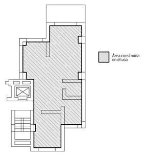
5.2. Ilustración 02.
CAP 1,
1.1. CONCEPTOS Y DEFINICIONES. Empate estricto y empate volumétrico
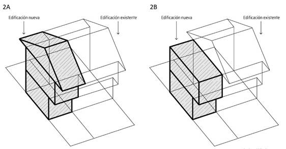
5.3. Ilustraciones 03A y 03B.
CAP. 1, 1.1.
CONCEPTOS Y DEFINICIONES. Punto Fijo y
Hall de cubierta
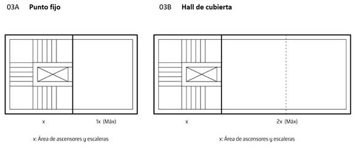
5.4. Ilustración 04.
CAP. 1, 1.1.
CONCEPTOS Y DEFINICIONES. Línea de
inclinación del terreno.
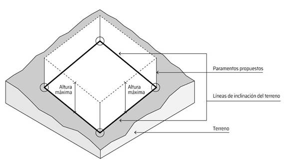
5.5. Ilustración 05A.
CAP. 1, 1.2.1., C. Alturas en terrenos
inclinados
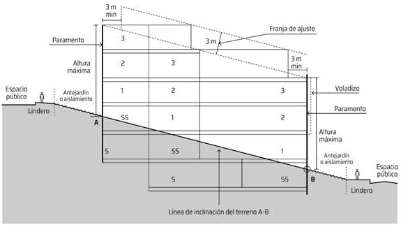
5.6. Ilustraciones 05B y 05C.
CAP. 1, 1.2.1., C. Alturas en terrenos
inclinados.
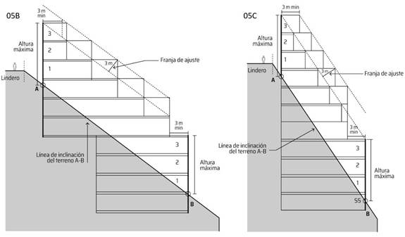
5.7. Ilustraciones 06A y 06B
CAP. 1, 1.2.1., E. Empates de alturas
(tratamientos de Mejoramiento Integral y Consolidación)

5.8. Ilustraciones 06C y 06D
CAP. 1, 1.2.1., E. Empates de alturas
(tratamientos de Mejoramiento Integral y Consolidación)
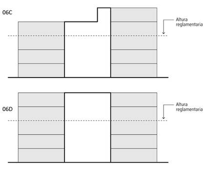
5.9. Ilustración 07.
CAP 1, 1.2.2., A.2. Dimensionamiento de
antejardines. Reducción de antejardín en costado de manzana.
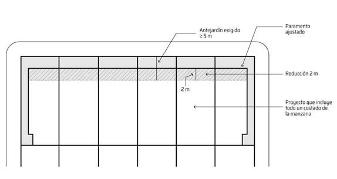
5.10. Ilustraciones 08A, 08B y 08C.
CAP 1, 1.2.2., A.3.2. Empates
de antejardines (tratamientos de Renovación Urbana y
Desarrollo)
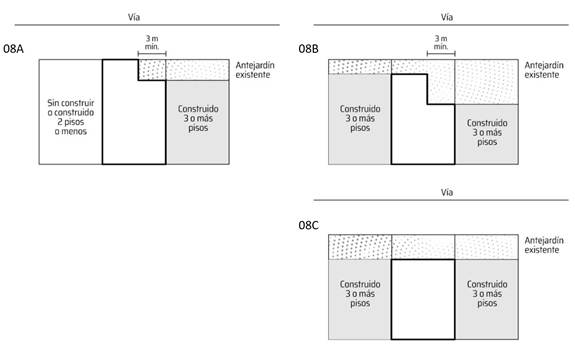
5.11. Ilustración 09.
CAP 1, 1.2.2., A.4. Antejardines en nivel
diferente del andén
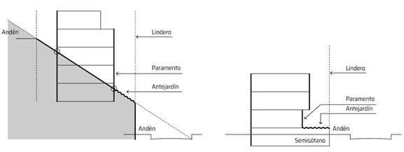
5.12. Ilustración 10.
CAP 1, 1.2.2., B.1. Exigencia de
aislamientos posteriores
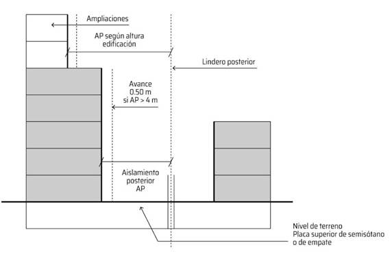
5.13. Ilustración 11.
CAP 1, 1.2.2., B.2.
Dimensionamiento de aislamientos posteriores. Avances de fachada.
CAP 1, 1.2.2., C.2.
Dimensionamiento de aislamientos laterales. Avances de fachada. CAP 1, 1.2.2.,
D.2. Dimensionamiento de aislamiento entre edificaciones. Avances de fachada.
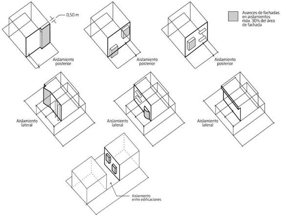
5.14. Ilustración 12.
CAP 1, 1.2.2., D.2. Dimensionamiento de
aislamientos entre edificaciones.
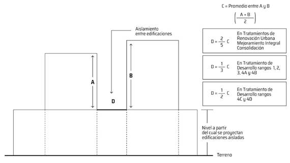
5.15. Ilustración 13.
CAP. 1, 1.2.2., E.1. Exigencia y
dimensiones de retrocesos de fachada contra espacio público (Tratamientos de
Desarrollo, Renovación Urbana y Consolidación)
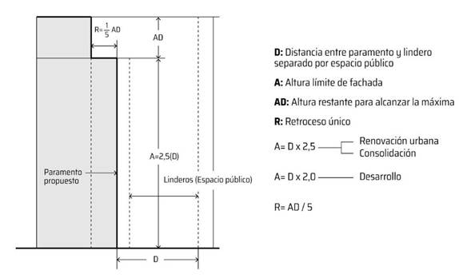
5.16. Ilustración 14.
CAP 1., 1.2.3., B. Dimensionamiento de
patios
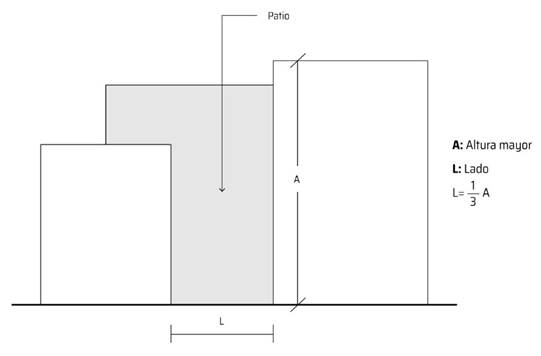
5.17. Ilustración 15.
CAP 1., 1.2.3., B. Dimensionamiento de
patios. Ejemplos de configuración.
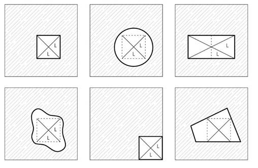
5.18. Ilustración 16.
CAP. 1, 1.2.8., C. Cerramientos contra
predios colindantes y 1.2.8.4. CAP. 1, 1.2.8., D. Cerramientos en pisos
superiores contra vacíos de antejardines, aislamientos, patios, predios
vecinos, vías, parques y/o espacio público
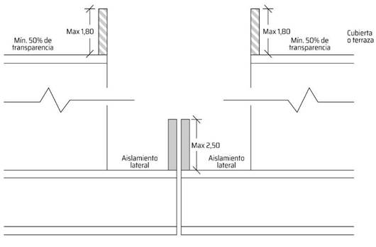
5.19. Ilustración 17.
CAP. 1, 1.6.2. Condiciones específicas de
las cesiones de espacio público para los diferentes tratamientos. Elementos
para cumplimiento de las cesiones de espacio público. Relaciones con franjas de
control ambiental (ejemplo)
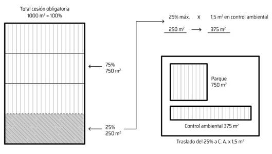
5.20. Ilustración 18.
CAP. 1, 1.6.2. Condiciones específicas de
las cesiones de espacio público para los diferentes tratamientos. Elementos
para cumplimiento de las cesiones de espacio público. Relaciones con franjas de
control ambiental (ejemplo)
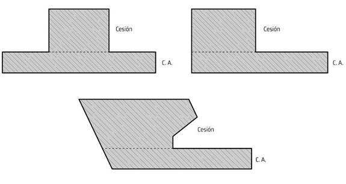
5.21. Ilustración 19.
CAP. 1, 1.6.2. Condiciones específicas de
las cesiones de espacio público para los diferentes tratamientos. Configuración geométrica - dimensión mínima de costado
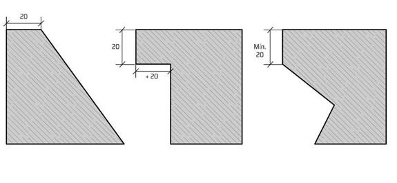
5.22. Ilustración 20.
CAP. 1, 1.6.2. Condiciones específicas de
las cesiones de espacio público para los diferentes tratamientos. Configuración geométrica - proporción de costados
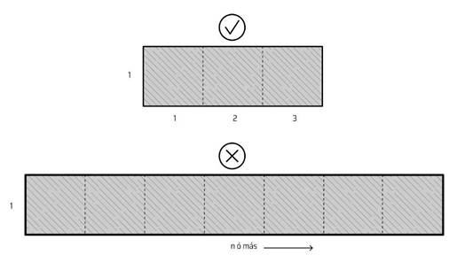
5.23. Ilustración 21.
CAP. 1, 1.6.2. Condiciones específicas de las cesiones de espacio público para los diferentes tratamientos. Configuración geométrica - polígonos irregulares
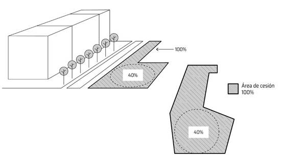
5.24. Ilustración 22.
CAP. 1, 1.6.2. Condiciones específicas de las cesiones de espacio público para los diferentes tratamientos. Configuración geométrica - priorización de las esquinas de manzanas
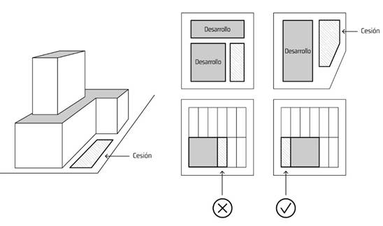
5.25. Ilustración 23.
CAP. 1, 1.6.2.
Condiciones específicas de las cesiones de espacio público para los
diferentes tratamientos. Accesibilidad -
pasos peatonales seguros
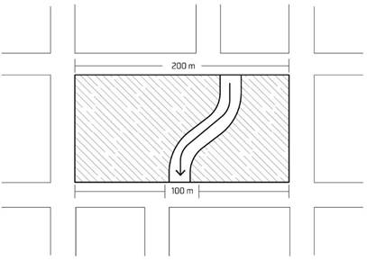
5.26. Ilustración 24.
CAP. 1, 1.6.2. Condiciones específicas de
las cesiones de espacio público para los diferentes tratamientos. Accesibilidad
- polígonos con área igual o mayor a una (1) hectárea
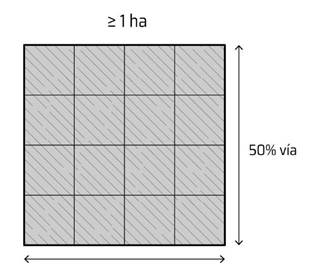
5.27. Ilustración 25.
CAP. 1, 1.6.2. Condiciones específicas de
las cesiones de espacio público para los diferentes tratamientos. Accesibilidad - acceso peatonal a vecinos colindantes
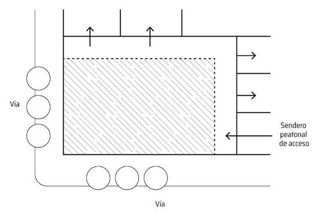
5.28. Ilustración 26.
CAP. 1, 1.6.3. Condiciones para las
cesiones de espacio público en terreno inclinado
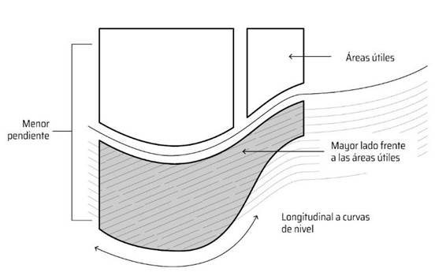
5.29. Ilustración 27.
CAP. 1, 1.7.1. Configuración de áreas
privadas afectas al uso público en centros de manzana - accesibilidad vehicular
sobre vías circundantes
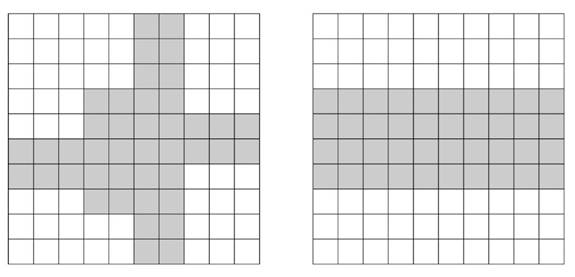
5.30. Ilustración 28.
CAP. 1, 1.7.1. Configuración de áreas
privadas afectas al uso público en centros de manzana

5.31. Ilustración 29.
CAP. 1, 1.8.6., A. Localización de accesos
y salidas vehiculares - Distancia de intersecciones viales

5.32. Ilustración 30.
CAP. 1, 1.8.6., A. Localización de accesos
y salidas vehiculares - Calzada de servicio paralela
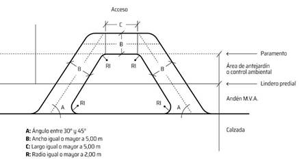
5.33. Ilustración 31.
CAP. 1., 1.8.7., B. Estacionamientos de
bicicletas
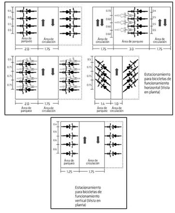
5.34. Ilustración 32.
CAP. 1., 1.8.8. Dimensiones de circulación
y áreas de maniobra
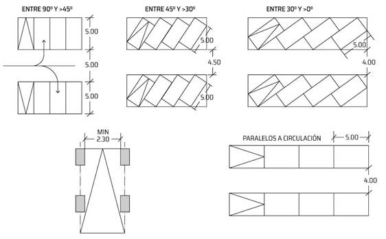
5.35. Ilustración 33.
CAP. 1., 1.8.8. Dimensiones de circulación
y áreas de maniobra - Radio mínimo. CAP.
1., 1.8.9. Rampas vehiculares
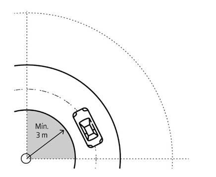
5.36. Ilustración 34.
CAP. 1., 1.8.10. Servidumbres de
estacionamientos - servidumbre vertical en aislamiento posterior

5.37. Ilustración 35.
CAP. 1, 1.10. CONDICIONES DE VENTILACIÓN E
ILUMINACIÓN - Tratamiento de Mejoramiento Integral
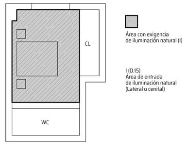
5.38. Ilustración 36.
CAP. 2, 2.1.1. Orientación de las
edificaciones en cerros (RANGOS 4C y 4D)
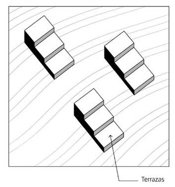
5.39. Ilustración 37.
CAP. 2, 2.1.1. Orientación de las
edificaciones en cerros (RANGOS 4C y 4D)
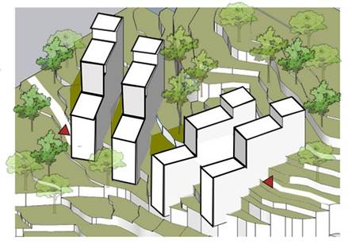
5.40. Ilustración 38.
CAP. 2, 2.2.1., A.3. Empates de
aislamientos posteriores en el Tratamiento de Renovación Urbana. CAP. 2,
2.3.2., A.3. Empates de aislamientos posteriores en el Tratamiento de
Mejoramiento Integral. CAP. 2, 2.4.2., A.3. Empates de aislamientos posteriores
en el Tratamiento de Consolidación
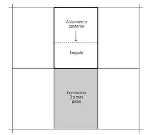
5.41. Ilustración 39. Aislamientos posteriores en predios regulares y englobes prediales (ejemplos)
CAP 2, 2.4.2.,
A.1. Exigencia de aislamientos posteriores en el Tratamiento de
Consolidación. CAP 2, 2.3.2., A.1.
Exigencia de aislamientos posteriores en el Tratamiento de Mejoramiento
Integral
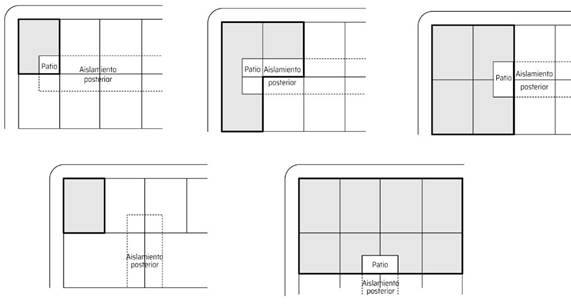
5.42. Ilustración 40. Aislamientos posteriores en predios irregulares (ejemplos)
CAP 2, 2.3.2., A.1. Exigencia de
aislamientos posteriores en el Tratamiento de Mejoramiento Integral. CAP 2,
2.4.2., A.1. Exigencia de aislamientos posteriores en el Tratamiento de
Consolidación.
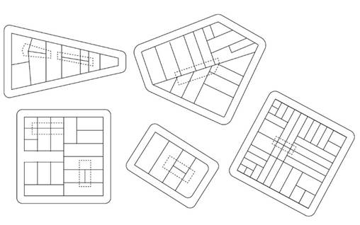
5.43. Ilustración 41.
CAP. 4. 4.2.2.
RELACIÓN DE USOS CON LA MALLA VIAL
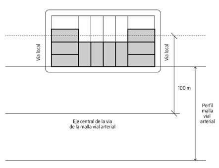
5.44. Mapa anexo No 01.
SECTORIZACIÓN DE OBSTÁCULOS POR ALTURA DEL
ESPACIO AÉREO DE BOGOTÁ – AEROPUERTO INTERNACIONAL EL DORADO Y AEROPUERTO
GUAYMARAL (año 2021).
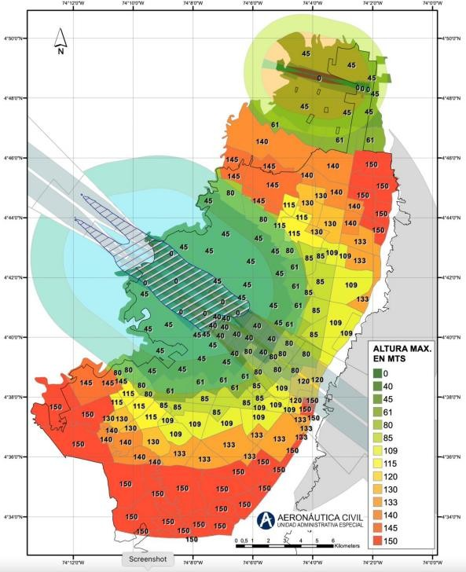
Fuente: Unidad Administrativa Especial de Aeronáutica Civil (AEROCIVIL). 2021